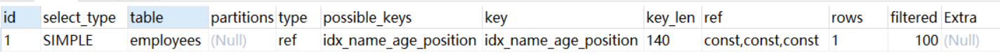
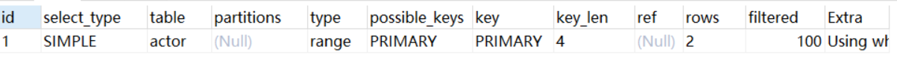

1.MySQL介绍
背景:
MySQL是一个关系型数据库管理系统，由瑞典MySQL AB 公司开发，属于 Oracle 旗下产品。MySQL 是最流行的关系型数据库管理系统之一，在 WEB 应用方面，MySQL是最好的 RDBMS (Relational Database Management System，关系数据库管理系统) 应用软件之一。 MySQL是一种关系型数据库管理系统，关系数据库将数据保存在不同的表中，而不是将所有数据放在一个大仓库内，这样就增加了速度并提高了灵活性。 MySQL所使用的 SQL 语言是用于访问数据库的最常用标准化语言。MySQL 软件采用了双授权政策，分为社区版和商业版，由于其体积小、速度快、总体拥有成本低，尤其是开放源码这一特点，一般中小型网站的开发都选择 MySQL 作为网站数据库都选择 MySQL 作为网站数据库
SQL:
SQL (Structured Query Language) 是具有数据操纵和数据定义等多种功能的数据库语言，这种语言具有交互性特点，能为用户提供极大的便利，数据库管理系统应充分利用SQL语言提高计算机应用系统的工作质量与效率。SQL语言不仅能独立应用于终端，还可以作为子语言为其他程序设计提供有效助力，该程序应用中，SQL可与其他程序语言一起优化程序功能，进而为用户提供更多更全面的信息
关系型数据库:
关系型数据库，是指采用了关系模型来组织数据的数据库，其以行和列的形式存储数据，以便于用户理解，关系型数据库这一系列的行和列被称为表，一组表组成了数据库。
用户通过查询来检索数据库中的数据，而查询是一个用于限定数据库中某些区域的执行代码。关系模型可以简单理解为二维表格模型，而一个关系型数据库就是由二维表及其之间的关系组成的一个数据组织。
1.存储方式：传统的关系型数据库采用表格的储存方式，数据以行和列的方式进行存储，要读取和查询都十分方便。2.存储结构：关系型数据库按照结构化的方法存储数据，每个数据表都必须对各个字段定义好（也就是先定义好表的结构），再根据表的结构存入数据，这样做的好处就是由于数据的形式和内容在存入数据之前就已经定义好了，所以整个数据表的可靠性和稳定性都比较高，但带来的问题就是一旦存入数据后，如果需要修改数据表的结构就会十分困难。3.存储规范：关系型数据库为了避免重复、规范化数据以及充分利用好存储空间，把数据按照最小关系表的形式进行存储，这样数据管理的就可以变得很清晰、一目了然，当然这主要是一张数据表的情况。如果是多张表情况就不一样了，由于数据涉及到多张数据表，数据表之间存在着复杂的关系，随着数据表数量的增加，数据管理会越来越复杂。4.扩展方式：由于关系型数据库将数据存储在数据表中，数据操作的瓶颈出现在多张数据表的操作中，而且数据表越多这个问题越严重，如果要缓解这个问题，只能提高处理能力，也就是选择速度更快性能更高的计算机，这样的方法虽然可以一定的拓展空间，但这样的拓展空间一定有非常有限的，也就是关系型数据库只具备纵向扩展能力。5.查询方式：关系型数据库采用结构化查询语言（即SQL）来对数据库进行查询，SQL早已获得了各个数据库厂商的支持，成为数据库行业的标准，它能够支持数据库的CRUD（增加，查询，更新，删除）操作，具有非常强大的功能，SQL可以采用类似索引的方法来加快查询操作。6.规范化：在数据库的设计开发过程中开发人员通常会面对同时需要对一个或者多个数据实体（包括数组、列表和嵌套数据）进行操作，这样在关系型数据库中，一个数据实体一般首先要分割成多个部分，然后再对分割的部分进行规范化，规范化以后再分别存入到多张关系型数据表中，这是一个复杂的过程。好消息是随着软件技术的发展，相当多的软件开发平台都提供一些简单的解决方法，例如，可以利用ORM层（也就是对象关系映射）来将数据库中对象模型映射到基于SQL的关系型数据库中去以及进行不同类型系统的数据之间的转换。7.事务性：关系型数据库强调ACID规则（原子性（Atomicity）、一致性（Consistency）、隔离性（Isolation）、持久性（Durability）），可以满足对事务性要求较高或者需要进行复杂数据查询的数据操作，而且可以充分满足数据库操作的高性能和操作稳定性的要求。并且关系型数据库十分强调数据的强一致性，对于事务的操作有很好的支持。关系型数据库可以控制事务原子性细粒度，并且一旦操作有误或者有需要，可以马上回滚事务。8.读写性能：关系型数据库十分强调数据的一致性，并为此降低读写性能付出了巨大的代价，虽然关系型数据库存储数据和处理数据的可靠性很不错，但一旦面对海量数据的处理的时候效率就会变得很差，特别是遇到高并发读写的时候性能就会下降的非常厉害。9.授权方式：关系型数据库常见的有 Oracle，SQLServer，DB2，Mysql，除了Mysql大多数的关系型数据库如果要使用都需要支付一笔价格高昂的费用，即使是免费的Mysql性能也受到了诸多的限制。
2.MySQL功能
1.关系型数据存储.查询2.查询方式,只是sql3.支持事务4.对外提供接口访问5.是否只是扩展来应对 超大数据集 和 高并发6.存储 数据表的 行信息 表信息 索引信息 到磁盘中,数据结构怎么设计7.缓存功能8.词法解析功能9.日志功能
3.MySQL需要实现什么
1.磁盘IO 与 内存 的高效交换数据2.网络IO(tcp 请求的) 与 内存3.sql规则制定4.sql解析词法分析4,sql优化.sql语句优化5.sql缓存bufferPool 数据页缓存6.数据结构设计1).磁盘中如何存MySQL的数据,基本数据,索引数据2).磁盘和内存交互需要设计什么数据结构? 磁盘中如何存储,内存中如何存储,中间数据载体
4.MySQL的设计
大致执行链路
索引结构
B-Tree
B+Tree
Hash
存储引擎及其索引文件结构
MySAM
InnoDB
文件结构
一条mysql数据==>对应一个数据行结构数据, 数据行: 数据内容,空值信息,各个字段信息,下一数据行信息,等等==>多个行组成数据页 数据页: 存储多个数据行,存储B+树信息,cache信息(数据行统计数据) 容量信息等等.==>数据页 属于某个区,段信息,等等. 也就是表空间 这部分就是数据存储单元,就是和磁盘打交道了.层层,封装,建立合适的数据结构,把信息串联到一起.
行格式
，它是InnoDB管理存储空间的基本单位，一个页的大小一般是16KB。InnoDB为了不同的目的而设计了许多种不同类型的页，比如存放表空间头部信息的页，存放Insert Buffer信息的页，存放INODE信息的页，存放undo日志信息的页
页是
MySQL中磁盘和内存交互的基本单位，也是MySQL是管理存储空间的基本单位。指定和修改行格式的语法如下：
CREATE TABLE 表名 (列的信息) ROW_FORMAT=行格式名称ALTER TABLE 表名 ROW_FORMAT=行格式名称InnoDB目前定义了4种行格式COMPACT行格式
具体组成如图：
Redundant行格式
Dynamic和Compressed行格式
这两种行格式类似于
COMPACT行格式，只不过在处理行溢出数据时有点儿分歧，它们不会在记录的真实数据处存储字符串的前768个字节，而是把所有的字节都存储到其他页面中，只在记录的真实数据处存储其他页面的地址。另外，
Compressed行格式会采用压缩算法对页面进行压缩。
- 一个页一般是
16KB，当记录中的数据太多，当前页放不下的时候，会把多余的数据存储到其他页中，这种现象称为行溢出。
数据页
，它是InnoDB管理存储空间的基本单位，一个页的大小一般是16KB。InnoDB为了不同的目的而设计了许多种不同类型的页，比如存放表空间头部信息的页，存放Insert Buffer信息的页，存放INODE信息的页，存放undo日志信息的页
InnoDB为了不同的目的而设计了不同类型的页，我们把用于存放记录的页叫做
数据页。一个数据页可以被大致划分为7个部分，分别是
File Header，表示页的一些通用信息，占固定的38字节。Page Header，表示数据页专有的一些信息，占固定的56个字节。Infimum + Supremum，两个虚拟的伪记录，分别表示页中的最小和最大记录，占固定的26个字节。User Records：真实存储我们插入的记录的部分，大小不固定。Free Space：页中尚未使用的部分，大小不确定。Page Directory：页中的某些记录相对位置，也就是各个槽在页面中的地址偏移量，大小不固定，插入的记录越多，这个部分占用的空间越多。File Trailer：用于检验页是否完整的部分，占用固定的8个字节。
每个记录的头信息中都有一个
next_record属性，从而使页中的所有记录串联成一个单链表。InnoDB会把页中的记录划分为若干个组，每个组的最后一个记录的地址偏移量作为一个槽，存放在Page Directory中，所以在一个页中根据主键查找记录是非常快的，分为两步：- 通过二分法确定该记录所在的槽。
- 通过记录的next_record属性遍历该槽所在的组中的各个记录。
每个数据页的
File Header部分都有上一个和下一个页的编号，所以所有的数据页会组成一个双链表。为保证从内存中同步到磁盘的页的完整性，在页的首部和尾部都会存储页中数据的校验和和页面最后修改时对应的
LSN值，如果首部和尾部的校验和和LSN值校验不成功的话，就说明同步过程出现了问题。
表空间
表空间是一个抽象的概念，对于系统表空间来说，对应着文件系统中一个或多个实际文件；对于每个独立表空间来说，对应着文件系统中一个名为表名.ibd的实际文件。大家可以把表空间想象成被切分为许许多多个页的池子，当我们想为某个表插入一条记录的时候，就从池子中捞出一个对应的页来把数据写进去
事务隔离
概述
我们的数据库一般都会并发执行多个事务，多个事务可能会并发的对相同的一批数据进行增删改查操作，可能就会导致我们说的脏写、脏读、不可重复读、幻读这些问题。
这些问题的本质都是数据库的多事务并发问题，为了解决多事务并发问题，数据库设计了事务隔离机制、锁机制、MVCC多版本并发控制隔离机制，用一整套机制来解决多事务并发问题。接下来，我们会深入讲解这些机制，让大家彻底理解数据库内部的执行原理。
1.事务设计事务是描述一组sql组成的逻辑单元,他有4个属性.并发的事务的时候,会引起各种问题.==> 脏读,脏写,不可重复读,幻读.==> 设计了4种隔离级别,来解决各种问题.==> 不同的隔离级别,要承担的风险不一样,读已提交rc 并发性性能好,但是会出现不可重复读和幻读的问题可重复读rr● 并发性能不如上面,会有间隙锁(导致出现死锁的几率比RC大的多！),等锁的问题发生.● 条件列未命中索引会锁表! 扫描非索引条件会走举簇索引然后type=All 然后锁去全表 而在RC隔离级别下，只锁行但是,代码能解决可重读读的问题.序列化 都是用锁,来实现,读读 写读,读写,写读都上锁. 效率低
事务及其ACID属性
事务是由一组SQL语句组成的逻辑处理单元,事务具有以下4个属性,通常简称为事务的ACID属性。
- 原子性(Atomicity) ：事务是一个原子操作单元,其对数据的修改,要么全都执行,要么全都不执行。
- 一致性(Consistent) ：在事务开始和完成时,数据都必须保持一致状态。这意味着所有相关的数据规则都必须应用于事务的修改,以保持数据的完整性。
- 隔离性(Isolation) ：数据库系统提供一定的隔离机制,保证事务在不受外部并发操作影响的“独立”环境执行。这意味着事务处理过程中的中间状态对外部是不可见的,反之亦然。
- 持久性(Durable) ：事务完成之后,它对于数据的修改是永久性的,即使出现系统故障也能够保持。
并发事务处理带来的问题
更新丢失(Lost Update)或脏写
当两个或多个事务选择同一行，然后基于最初选定的值更新该行时，由于每个事务都不知道其他事务的存在，就会发生丢失更新问题–最后的更新覆盖了由其他事务所做的更新。
脏读（Dirty Reads）
一个事务正在对一条记录做修改，在这个事务完成并提交前，这条记录的数据就处于不一致的状态；这时，另一个事务也来读取同一条记录，如果不加控制，第二个事务读取了这些“脏”数据，并据此作进一步的处理，就会产生未提交的数据依赖关系。这种现象被形象的叫做“脏读”。
一句话：事务A读取到了事务B已经修改但尚未提交的数据，还在这个数据基础上做了操作。此时，如果B事务回滚，A读取的数据无效，不符合一致性要求。
不可重读（Non-Repeatable Reads）
一个事务在读取某些数据后的某个时间，再次读取以前读过的数据，却发现其读出的数据已经发生了改变、或某些记录已经被删除了！这种现象就叫做“不可重复读”。
一句话：事务A内部的相同查询语句在不同时刻读出的结果不一致，不符合隔离性
幻读（Phantom Reads）
一个事务按相同的查询条件重新读取以前检索过的数据，却发现其他事务插入了满足其查询条件的新数据，这种现象就称为“幻读”。
一句话：事务A读取到了事务B提交的新增数据，不符合隔离性
事务隔离级别
“脏读”、“不可重复读”和“幻读”,其实都是数据库读一致性问题,必须由数据库提供一定的事务隔离机制来解决。
数据库的事务隔离越严格,并发副作用越小,但付出的代价也就越大,因为事务隔离实质上就是使事务在一定程度上“串行化”进行,这显然与“并发”是矛盾的。
同时,不同的应用对读一致性和事务隔离程度的要求也是不同的,比如许多应用对“不可重复读"和“幻读”并不敏感,可能更关心数据并发访问的能力。
常看当前数据库的事务隔离级别: show variables like 'tx_isolation';
设置事务隔离级别：**set tx_isolation='REPEATABLE-READ';**
Mysql默认的事务隔离级别是可重复读，用Spring开发程序时，如果不设置隔离级别默认用Mysql设置的隔离级别，如果Spring设置了就用已经设置的隔离级别
MVCC机制
实现,rc,rr的隔离级别,有两种方案
1.mvcc 解决并发读 锁解决并发写
2.读写锁,类似reentrantReadWriteLock.
归纳
1.全局按执行顺序排序的事务id+2.readView 视图机制3.版本链思路解决 两种隔离级别下的并发读的问题.思路:隔离级别与时间线相关.==> 事务id的实现所有数据在哪记录 ==> 版本链此时所有活跃事务信息统计==>视图机制.● readview维护活跃的 tra_ids min_id max_idmin_id 活跃里面最小的max_id 代表应该分配给下一个事务的id , 并不是ids 里面最大的. 因为此时ids里面最大的(比如200),如果他一直不提交,后进来的(300) 300 已经提交了. 所以301 就是max_id. 版本链 第一条数据就是300.从版本链里面拿数据如果大于max_id,不管rc,rr,都代表这个数据集是不可见的.代表超越当前版本的数据 (如果是在rc,里本身拿的就是顺时值,不可能出现啊,如果是rr,那可以理解,因为可重复读这个事务执行的时候,可能已经变更好几轮了.)如果小于min_id ,代表不是活跃的 并且也小于 max_id 代表都是已经提交过的. 是可见的.不管是rc,rr 都是代表提交过的如果是在两者之间.那么他要么已经提交,要么还未提交.判断是否在ids,在的话,不可用, 不在的话,就是已经提交过的了.对于rc来说,每次都取新值ReadView,所以,他拿到的ids 就是实时的.对于rr来说,只在select的时候拿依次readview ,那么这个ids和maxid,还有minid 就限制了他能拿的数据就一直是,ReadView里,与版本链对应的,可见的数据.在 小于max_id的这个范围内.对于rr以后的阶段,版本链会更新新的数据,(已提交,未提交) ids变了(更新更多的数据). maxid变大 .还想用原来的那批数据. 要么小于min,要么不在ids里面,且大于min,小于max.新commit的数据一定在 旧的ids里面,以及大于max里面.还得需要排除掉版本链里结论==>需要排除掉版本链里面 新commit的,以及正update的. 新commit的要么在旧的ids里面,要么在大于maxid 里面.所以,只用旧的readview 就能排除掉这些元素. 所以 rr 只取一次就能拿到需要的数据rc每次查询获取ReadView 从版本链,依次向后拿数据,拿到第一条,不在活跃事务ids里的数据就是答案rr只拿一次readView,就拿当前视图里,可见的数据,版本链里第一条不在ids里面的tips :1.一条行数据,只能给一个事务正在修改. 因为,update 要上行锁.
事务id
mysql,维护每一个事务在准备执行变更(update,delete,insert)的时候,会获得一个事务id.全局公用一份SHOW ENGINE INNODB STATUS 通过这个可以看到,下一份需要生成的事务id生成规则:(每次 变更操作的事务,就给一个)如果应对关机呢: 就定期发送数据到磁盘. 下次重启,空数据补齐.对于读写事务来说，只有在它第一次对某个表（包括用户创建的临时表）执行增、删、改操作时才会为这个事务分配一个事务id，否则的话也是不分配事务id的。
事务id是怎么生成的
这个事务id本质上就是一个数字，它的分配策略和我们前边提到的对隐藏列row_id（当用户没有为表创建主键和UNIQUE键时InnoDB自动创建的列）的分配策略大抵相同，具体策略如下：
- 服务器会在内存中维护一个全局变量，每当需要为某个事务分配一个
事务id时，就会把该变量的值当作事务id分配给该事务，并且把该变量自增1。 - 每当这个变量的值为
256的倍数时，就会将该变量的值刷新到系统表空间的页号为5的页面中一个称之为Max Trx ID的属性处，这个属性占用8个字节的存储空间。 - 当系统下一次重新启动时，会将上边提到的
Max Trx ID属性加载到内存中，将该值加上256之后赋值给我们前边提到的全局变量（因为在上次关机时该全局变量的值可能大于Max Trx ID属性值）。
这样就可以保证整个系统中分配的事务id值是一个递增的数字。先被分配id的事务得到的是较小的事务id，后被分配id的事务得到的是较大的事务id。
图解解释
参考掘金小册表达的: https://juejin.cn/book/6844733769996304392/section/6844733770071801870
锁机制
概述
xxxxxxxxxx首先不经常用.只是mysql提供了某些操作.如共享锁和独占锁.设计上,还有间隙锁,表锁,隐士的锁. 等等.在隔离级别设计与实现上. 会使用行锁. (解决并发写的问题.)
锁详解
锁是计算机协调多个进程或线程并发访问某一资源的机制。
在数据库中，除了传统的计算资源（如CPU、RAM、I/O等）的争用以外，数据也是一种供需要用户共享的资源。如何保证数据并发访问的一致性、有效性是所有数据库必须解决的一个问题，锁冲突也是影响数据库并发访问性能的一个重要因素。
锁分类
从性能上分为乐观锁(用版本对比来实现)和悲观锁
从对数据库操作的类型分，分为读锁和写锁(都属于悲观锁)
读锁（共享锁，S锁(Shared)）：
针对同一份数据，多个读操作可以同时进行而不会互相影响,有读锁的时候,不允许加写锁.
xxxxxxxxxxselect ***** LOCK IN SHARE MODE
写锁（排它锁，X锁(eXclusive)）：
当前写操作没有完成前，它会阻断其他写锁和读锁
xxxxxxxxxxupdate的时候,或者 for update
从对数据操作的粒度分，分为表锁和行锁
表锁
每次操作锁住整张表。开销小，加锁快；不会出现死锁；锁定粒度大，发生锁冲突的概率最高，并发度最低；一般用在整表数据迁移的场景。
行锁
每次操作锁住一行数据。开销大，加锁慢；会出现死锁；锁定粒度最小，发生锁冲突的概率最低，并发度最高。
总结：
MyISAM在执行查询语句SELECT前，会自动给涉及的所有表加读锁,在执行update、insert、delete操作会自动给涉及的表加写锁。
InnoDB在执行查询语句SELECT时(非串行隔离级别)，不会加锁。但是update、insert、delete操作会加行锁。
简而言之，就是读锁会阻塞写，但是不会阻塞读。而写锁则会把读和写都阻塞
锁优化建议
● 尽可能让所有数据检索都通过索引来完成，避免无索引行锁升级为表锁
● 合理设计索引，尽量缩小锁的范围
● 尽可能减少检索条件范围，避免间隙锁
● 尽量控制事务大小，减少锁定资源量和时间长度，涉及事务加锁的sql尽量放在事务最后执行
● 尽可能低级别事务隔离
问题
共享锁独占锁这两个锁,是为了解决什么问题,存在的?
有的时候的业务需求,可以使用
共享锁,的目的是想让你读的时候,不允许被update. 某些银行业务系统需要再你读的时候,不允许被update,转账的时候
LOCK IN SHARE MODE
独占锁.是写写,写读,读写,互斥. for update
mvcc 机制解决了 并发产生的(脏读,不可重复读) 的问题. 那么能解决写并发的问题吗??
mvcc只是为读操作设计的机制,是一种无锁的操作.
而写并发的问题(写入数据有序,不错乱,比如一起操作 10 个索引数据,如果不上锁,就是脏写)
写并发是由锁控制,如果写并发不控制,那么mvcc 就是脏写了.至于能不保证结果.
我感觉能,但是,实际咋地不知道. 反正不能是并发操作一行, 会有问题,就像java里一样
先读再写,万一写的时候读到了别人修改后的数据,在写,那不就gg了. 就跟count++ 一样
所以,并发写上锁
有什么办法解决 并发操作产生的问题吗
1.读mvcc,写用锁
2.读用读锁(共享读,不让写),写用写锁. 就跟java里的reentrantReadWriteLock 一样
mvcc 机制 与 共享锁,独占锁之间的联系.
mvcc 机制是用来解决两种隔离级别下,并发读的问题.
共享锁和独占锁,用来实现某些特殊需求的.
多粒度的锁. IS IX 这种是解决什么问题
比如,想加表锁,但是你得确保,更细粒度的锁,都释放掉才行.(遍历所有资源,看有没有锁)
所以为了确保,能使用更粗粒度的锁,
那么在加细粒度锁的时候,得再加一个意向锁,标记此时锁的状态.
这样,粗粒度的锁,看到的时候,就知道,啥子情况了.
==> 如果在java 中,这代码得咋写. 粗粒度到什么时候,意向锁,标记到哪个位置....
类里面,两个锁标记呗? 还得维护,我脑仁疼.
感觉可以,放在一个更粗粒度的地方,维护上,设计成,类似重入锁 的样子.
间隙锁,是为mysql在可重复读隔离级别下,解决幻读使用的.
对于MyISAM、MEMORY、MERGE这些存储引擎来说，它们只支持表级锁
日志设计
概述
xxxxxxxxxxbinlog日志: 以二进制形式,记录所有变更操作(update,insert,delete 等)undo 日志 : 和==版本链==数据相关所有版本链上的数据,记录的回滚操作内容redo 日志: 和==数据页==相关,记录所有数据页变更的内容,索引树结构怎么变的,怎么移动的,数据怎么变的等等redo日志
总述
xxxxxxxxxx记录,数据页操作的一个IO文件.● 服务于持久化机制,提供一个保障(会在commit前完成写入日志文件)● 顺序写 优于随机写● 写一个优于写一堆● 减少了磁盘操作● 如果直接操作磁盘文件,还得加锁,页级别的锁.并发操作页,会不会有影响,所以锁的粒度也升级了所以磁盘操作,还是异步合适.我们知道InnoDB存储引擎是以页为单位来管理存储空间的，我们进行的增删改查操作其实本质上都是在访问页面（包括读页面、写页面、创建新页面等操作）。我们前边唠叨Buffer Pool的时候说过，在真正访问页面之前，需要把在磁盘上的页缓存到内存中的Buffer Pool之后才可以访问。但是在唠叨事务的时候又强调过一个称之为持久性的特性，就是说对于一个已经提交的事务，在事务提交后即使系统发生了崩溃，这个事务对数据库中所做的更改也不能丢失。但是如果我们只在内存的Buffer Pool中修改了页面，假设在事务提交后突然发生了某个故障，导致内存中的数据都失效了，那么这个已经提交了的事务对数据库中所做的更改也就跟着丢失了，这是我们所不能忍受的（想想ATM机已经提示狗哥转账成功，但之后由于服务器出现故障，重启之后猫爷发现自己没收到钱，猫爷就被砍死了）。那么如何保证这个持久性呢？一个很简单的做法就是在事务提交完成之前把该事务所修改的所有页面都刷新到磁盘，但是这个简单粗暴的做法有些问题：
刷新一个完整的数据页太浪费了
有时候我们仅仅修改了某个页面中的一个字节，但是我们知道在
InnoDB中是以页为单位来进行磁盘IO的，也就是说我们在该事务提交时不得不将一个完整的页面从内存中刷新到磁盘，我们又知道一个页面默认是16KB大小，只修改一个字节就要刷新16KB的数据到磁盘上显然是太浪费了。随机IO刷起来比较慢
一个事务可能包含很多语句，即使是一条语句也可能修改许多页面，倒霉催的是该事务修改的这些页面可能并不相邻，这就意味着在将某个事务修改的
Buffer Pool中的页面刷新到磁盘时，需要进行很多的随机IO，随机IO比顺序IO要慢，尤其对于传统的机械硬盘来说。
咋办呢？再次回到我们的初心：我们只是想让已经提交了的事务对数据库中数据所做的修改永久生效，即使后来系统崩溃，在重启后也能把这种修改恢复出来。所以我们其实没有必要在每次事务提交时就把该事务在内存中修改过的全部页面刷新到磁盘，只需要把修改了哪些东西记录一下就好，比方说某个事务将系统表空间中的第100号页面中偏移量为1000处的那个字节的值1改成2我们只需要记录一下：
将第0号表空间的100号页面的偏移量为1000处的值更新为
2。
这样我们在事务提交时，把上述内容刷新到磁盘中，即使之后系统崩溃了，重启之后只要按照上述内容所记录的步骤重新更新一下数据页，那么该事务对数据库中所做的修改又可以被恢复出来，也就意味着满足持久性的要求。因为在系统崩溃重启时需要按照上述内容所记录的步骤重新更新数据页，所以上述内容也被称之为重做日志，英文名为redo log，我们也可以土洋结合，称之为redo日志。与在事务提交时将所有修改过的内存中的页面刷新到磁盘中相比，只将该事务执行过程中产生的redo日志刷新到磁盘的好处如下：
redo日志占用的空间非常小存储表空间ID、页号、偏移量以及需要更新的值所需的存储空间是很小的，关于
redo日志的格式我们稍后会详细唠叨，现在只要知道一条redo日志占用的空间不是很大就好了。redo日志是顺序写入磁盘的在执行事务的过程中，每执行一条语句，就可能产生若干条
redo日志，这些日志是按照产生的顺序写入磁盘的，也就是使用顺序IO
unDo日志
xxxxxxxxxx目的:● 为了回滚数据用的● 记录在某个数据页中,表空间归属不知道.
事务回滚的需求
我们说过事务需要保证原子性，也就是事务中的操作要么全部完成，要么什么也不做。但是偏偏有时候事务执行到一半会出现一些情况，比如：
- 情况一：事务执行过程中可能遇到各种错误，比如服务器本身的错误，操作系统错误，甚至是突然断电导致的错误。
- 情况二：程序员可以在事务执行过程中手动输入
ROLLBACK语句结束当前的事务的执行。
这两种情况都会导致事务执行到一半就结束，但是事务执行过程中可能已经修改了很多东西，为了保证事务的原子性，我们需要把东西改回原先的样子，这个过程就称之为回滚（英文名：rollback），这样就可以造成一个假象：这个事务看起来什么都没做，所以符合原子性要求。
小时候我非常痴迷于象棋，总是想找厉害的大人下棋，赢棋是不可能赢棋的，这辈子都不可能赢棋的，又不想认输，只能偷偷的悔棋才能勉强玩的下去。悔棋就是一种非常典型的回滚操作，比如棋子往前走两步，悔棋对应的操作就是向后走两步；比如棋子往左走一步，悔棋对应的操作就是向右走一步。数据库中的回滚跟悔棋差不多，你插入了一条记录，回滚操作对应的就是把这条记录删除掉；你更新了一条记录，回滚操作对应的就是把该记录更新为旧值；你删除了一条记录，回滚操作对应的自然就是把该记录再插进去。说的貌似很简单的样子[手动偷笑😏]。
从上边的描述中我们已经能隐约感觉到，每当我们要对一条记录做改动时（这里的改动可以指INSERT、DELETE、UPDATE），都需要留一手 —— 把回滚时所需的东西都给记下来。比方说：
- 你插入一条记录时，至少要把这条记录的主键值记下来，之后回滚的时候只需要把这个主键值对应的记录删掉就好了。
- 你删除了一条记录，至少要把这条记录中的内容都记下来，这样之后回滚时再把由这些内容组成的记录插入到表中就好了。
- 你修改了一条记录，至少要把修改这条记录前的旧值都记录下来，这样之后回滚时再把这条记录更新为旧值就好了。
设计数据库的大叔把这些为了回滚而记录的这些东东称之为撤销日志，英文名为undo log，我们也可以土洋结合，称之为undo日志。这里需要注意的一点是，由于查询操作（SELECT）并不会修改任何用户记录，所以在查询操作执行时，并不需要记录相应的undo日志。在真实的InnoDB中，undo日志其实并不像我们上边所说的那么简单，不同类型的操作产生的undo日志的格式也是不同的，不过先暂时把这些容易让人脑子糊的具体细节放一放，我们先回过头来看看事务id是个神马玩意儿。
binlog 日志
二进制文件,记录所有变更操作. 恢复的时候,有用.
主从同步的时候,会使用
缓存机制 BufferPool
概述
xxxxxxxxxx1.undo日志 redo日志 binlog 日志的设计保证数据能有效,能回滚,能恢复,能应对异常情况.并且只是是异步操作磁盘,效率很高.2.bufferpool 里面 的冷热lru 链表,有机会可以实现以下.
总结
磁盘太慢，用内存作为缓存很有必要。
Buffer Pool本质上是InnoDB向操作系统申请的一段连续的内存空间，可以通过innodb_buffer_pool_size来调整它的大小。Buffer Pool向操作系统申请的连续内存由控制块和缓存页组成，每个控制块和缓存页都是一一对应的，在填充足够多的控制块和缓存页的组合后，Buffer Pool剩余的空间可能产生不够填充一组控制块和缓存页，这部分空间不能被使用，也被称为碎片。InnoDB使用了许多链表来管理Buffer Pool。free链表中每一个节点都代表一个空闲的缓存页，在将磁盘中的页加载到Buffer Pool时，会从free链表中寻找空闲的缓存页。为了快速定位某个页是否被加载到
Buffer Pool，使用表空间号 + 页号作为key，缓存页作为value，建立哈希表。在
Buffer Pool中被修改的页称为脏页，脏页并不是立即刷新，而是被加入到flush链表中，待之后的某个时刻同步到磁盘上。LRU链表分为young和old两个区域，可以通过innodb_old_blocks_pct来调节old区域所占的比例。首次从磁盘上加载到Buffer Pool的页会被放到old区域的头部，在innodb_old_blocks_time间隔时间内访问该页不会把它移动到young区域头部。在Buffer Pool没有可用的空闲缓存页时，会首先淘汰掉old区域的一些页。我们可以通过指定
innodb_buffer_pool_instances来控制Buffer Pool实例的个数，每个Buffer Pool实例中都有各自独立的链表，互不干扰。自
MySQL 5.7.5版本之后，可以在服务器运行过程中调整Buffer Pool大小。每个Buffer Pool实例由若干个chunk组成，每个chunk的大小可以在服务器启动时通过启动参数调整。可以用下边的命令查看
Buffer Pool的状态信息：链路图
5.MySQL的应用
2.SQL如何使用索引
前言
现有工作中:,学习好mysql解决的目的是什么?
● 查询时间复杂度,空间复杂度
● 机器运行平稳,cpu,内存,磁盘IO,正常.
途径:
xxxxxxxxxxsql层面1.建立索引 ● 根据业务场景,建立合适的索引 1).索引个数 2).索引顺序 3).索引数量 varchar(100) ● 必要的时候,人工插入数据,建立索引. 2.使用索引普通查询 ● 使用索引 ● 索引覆盖 ● 不回表复杂查询 order by group by ● 使用索引,同联合索引类似 ● 尽量不使用filesort,如果使用filesort,尽量索引覆盖+where a ,b 的条件,能过滤掉很多数据
常见sql优化1
1.全值匹配
使用了,联合索引的全部索引,观察key_len 就知道用了几个索引内容
xxxxxxxxxxEXPLAIN SELECT * FROM employees WHERE name= 'LiLei';

xxxxxxxxxxEXPLAIN SELECT * FROM employees WHERE name= 'LiLei' AND age = 22;
xxxxxxxxxxEXPLAIN SELECT * FROM employees WHERE name= 'LiLei' AND age = 22 AND position ='manage r';
2.最左前缀法则
如果索引了多列，要遵守最左前缀法则。指的是查询从索引的最左前列开始并且不跳过索引中的列。
xxxxxxxxxxEXPLAIN SELECT * FROM employees WHERE name = 'Bill' and age = 31;EXPLAIN SELECT * FROM employees WHERE age = 30 AND position = 'dev';EXPLAIN SELECT * FROM employees WHERE position = 'manager';#都断了,所以最后都使用了第一部分的索引.
3.不在索引列上做任何操作（计算、函数、（自动or手动）类型转换），会导致索引失效而转向全表扫描
xxxxxxxxxxEXPLAIN SELECT * FROM employees WHERE name = 'LiLei';EXPLAIN SELECT * FROM employees WHERE left(name,3) = 'LiLei';#因为没有创建 left(name,3) 的值对应的索引树. 所以 用left(name,3) 只有值,没有树.所以全表.
给hire_time增加一个普通索引：
xxxxxxxxxxALTER TABLE `employees` ADD INDEX `idx_hire_time` (`hire_time`) USING BTREE ;EXPLAIN select * from employees where date(hire_time) ='2018‐09‐30';#
转化为日期范围查询，有可能会走索引：
xxxxxxxxxxEXPLAIN select * from employees where hire_time >='2018‐09‐30 00:00:00' and hire_time < ='2018‐09‐30 23:59:59';还原最初索引状态
ALTER TABLE employees DROP INDEX idx_hire_time;
4.存储引擎不能使用索引中范围条件右边的列
xxxxxxxxxxEXPLAIN SELECT * FROM employees WHERE name= 'LiLei' AND age = 22 AND position ='manage r'; EXPLAIN SELECT * FROM employees WHERE name= 'LiLei' AND age > 22 AND position ='manage r';#观察key_len 76+2 只使用了 两个键 3*24+2 + 4
5.尽量使用覆盖索引（只访问索引的查询（索引列包含查询列）），减少 select * 语句
xxxxxxxxxxEXPLAIN SELECT name,age FROM employees WHERE name= 'LiLei' AND age = 23 AND position ='manager';
xxxxxxxxxxEXPLAIN SELECT * FROM employees WHERE name= 'LiLei' AND age = 23 AND position ='manage r';
6.mysql在使用不等于（！=或者<>），not in ，not exists
的时候无法使用索引会导致全表扫描 < 小于、 > 大于、 <=、>= 这些，mysql内部优化器会根据检索比例、表大小等多个因素整体评估是否使用索引
xxxxxxxxxxEXPLAIN SELECT * FROM employees WHERE name != 'LiLei';
7.is null,is not null
一般情况下也无法使用索引
xxxxxxxxxxEXPLAIN SELECT * FROM employees WHERE name is null #看建立表的时候,是否允许这个字段为null #如果不为null 那么用null 去查询就是全表 #如果允许为null ,那么索引值里面就会包含null 的数据. 也就是会使用索引
8.like以通配符开头（'%kkkk'）mysql索引失效会变成全表扫描操作
xxxxxxxxxx EXPLAIN SELECT * FROM employees WHERE name like '%Lei'xxxxxxxxxx EXPLAIN SELECT * FROM employees WHERE name like 'Lei%'
问题：解决like'%字符串%'索引不被使用的方法？
a）使用覆盖索引，查询字段必须是建立覆盖索引字段
1 EXPLAIN SELECT name,age,position FROM employees WHERE name like '%Lei%';
b）如果不能使用覆盖索引则可能需要借助搜索引擎
9.字符串不加单引号索引失效
xxxxxxxxxx EXPLAIN SELECT * FROM employees WHERE name = '1000'; EXPLAIN SELECT * FROM employees WHERE name = 1000;
10.少用or或in，
用它查询时,mysql不一定使用索引，mysql内部优化器会根据检索比例、表大小等多个因素整体评
估是否使用索引，详见范围查询优化
xxxxxxxxxx EXPLAIN SELECT * FROM employees WHERE name = 'LiLei' or name = 'HanMeimei';
11.范围查询优化
给年龄添加单值索引
xxxxxxxxxx ALTER TABLE `employees` ADD INDEX `idx_age` (`age`) USING BTREE ; explain select * from employees where age >=1 and age <=2000;#评估索引查询所走行数,和全表扫描,哪个更优没走索引原因：mysql内部优化器会根据检索比例、表大小等多个因素整体评估是否使用索引。比如这个例子，可能是
由于单次数据量查询过大导致优化器最终选择不走索引
优化方法：可以将大的范围拆分成多个小范围
xxxxxxxxxxexplain select * from employees where age >=1 and age <=1000; explain select * from employees where age >=1001 and age <=2000;
还原索引状态
xxxxxxxxxx ALTER TABLE `employees` DROP INDEX `idx_age`;
12 总结
常见sql优化2
1、联合索引第一个字段用范围不会走索引
EXPLAIN SELECT * FROM employees WHERE name > 'LiLei' AND age = 22 AND position ='manager';
结论：联合索引第一个字段就用范围查找不会走索引，mysql内部可能觉得第一个字段就用范围，结果集应该很大，回表效率不高，还不如就全表扫描
2、强制走索引
EXPLAIN SELECT * FROM employees force index(idx_name_age_position) WHERE name > 'LiLei' AND age = 22 AND position ='manager';
结论：虽然使用了强制走索引让联合索引第一个字段范围查找也走索引，扫描的行rows看上去也少了点，但是最终查找效率不一定比全表扫描高，因为回表效率不高
做了一个小实验：
-- 关闭查询缓存 set global query_cache_size=0; set global query_cache_type=0; -- 执行时间0.333s SELECT * FROM employees WHERE name > 'LiLei'; -- 执行时间0.444s SELECT * FROM employees force index(idx_name_age_position) WHERE name > 'LiLei';
3、覆盖索引优化
EXPLAIN SELECT name,age,position FROM employees WHERE name > 'LiLei' AND age = 22 AND position ='manager';
4、in和or在表数据量比较大的情况会走索引，在表记录不多的情况下会选择全表扫描
EXPLAIN SELECT * FROM employees WHERE name in ('LiLei','HanMeimei','Lucy') AND age = 22 AND position ='manager';
EXPLAIN SELECT * FROM employees WHERE (name = 'LiLei' or name = 'HanMeimei') AND age = 22 AND position ='manager';
做一个小实验，将employees 表复制一张employees_copy的表，里面保留两三条记录
EXPLAIN SELECT * FROM employees_copy WHERE name in ('LiLei','HanMeimei','Lucy') AND age = 22 AND position ='manager';
EXPLAIN SELECT * FROM employees_copy WHERE (name = 'LiLei' or name = 'HanMeimei') AND age = 22 AND position ='manager';
5、like KK% 一般情况都会走索引
EXPLAIN SELECT * FROM employees WHERE name like 'LiLei%' AND age = 22 AND position ='manager';
EXPLAIN SELECT * FROM employees_copy WHERE name like 'LiLei%' AND age = 22 AND position ='manager';
这里给大家补充一个概念，索引下推**（Index Condition Pushdown，ICP）**, like KK%其实就是用到了索引下推优化
什么是索引下推了？
对于辅助的联合索引(name,age,position)，正常情况按照最左前缀原则，SELECT * FROM employees WHERE name like 'LiLei%' AND age = 22 AND position ='manager' 这种情况只会走name字段索引，因为根据name字段过滤完，得到的索引行里的age和position是无序的，无法很好的利用索引。
在MySQL5.6之前的版本，这个查询只能在联合索引里匹配到名字是 'LiLei' 开头的索引，然后拿这些索引对应的主键逐个回表，到主键索引上找出相应的记录，再比对age和position这两个字段的值是否符合。
MySQL 5.6引入了索引下推优化，可以在索引遍历过程中，对索引中包含的所有字段先做判断，过滤掉不符合条件的记录之后再回表，可以有效的减少回表次数。使用了索引下推优化后，上面那个查询在联合索引里匹配到名字是 'LiLei' 开头的索引之后，同时还会在索引里过滤age和position这两个字段，拿着过滤完剩下的索引对应的主键id再回表查整行数据。
索引下推会减少回表次数，对于innodb引擎的表索引下推只能用于二级索引，innodb的主键索引（聚簇索引）树叶子节点上保存的是全行数据，所以这个时候索引下推并不会起到减少查询全行数据的效果。
为什么范围查找Mysql没有用索引下推优化？
估计应该是Mysql认为范围查找过滤的结果集过大，like KK% 在绝大多数情况来看，过滤后的结果集比较小，所以这里Mysql选择给 like KK% 用了索引下推优化，当然这也不是绝对的，有时like KK% 也不一定就会走索引下推。
常见sql优化3
Order by与Group by优化
归纳
xxxxxxxxxxOrder by 优化● 1.保证使用索引.注:规则,类似使用联合索引1.不能断,且范围查询会断2.顺序不能换.3.升序降序,有要求. 8.0 之后支持降序● 2.使用索引条件排序,尽量不使用文件排序1.被排序字段,一定利用到索引(至少得是使用到联合索引)2.如果必须使用文件排序,尽量用到索引覆盖.------filesort 原理单路排序:从主键索引树上拿到所有数据,排序,返回.特点:一次查询,没有回表.双路排序从主键索引树上,拿到主键id和排序字段,排序,回表查询,返回数据特点: 能处理大数据量排序,不过需要回表可以通过调节参数值,来修改这个值,如果内存资源充足,为了提高排序速度,可以将阈值提高一点,这样就都使用单路排序了.不建议.---万事都可以explain 来解决==>理解不了了,看执行计划trace==>在解决不了,看源码.==>大家都是人,不就现在头发多了一点.
Case1：
xxxxxxxxxx分析：利用最左前缀法则：中间字段不能断，因此查询用到了name索引，从key_len=74也能看出，age索引列用在排序过程中，因为Extra字段里没有using filesort(这里可以 观察)EXPLAIN select * from employees where name = 'a' order by ageEXPLAIN select * from employees where name = 'a' and age > 1能从extra 字段观察出 order by 的效率
Case 2：
xxxxxxxxxx分析：从explain的执行结果来看：key_len=74，查询使用了name索引，由于用了position进行排序，跳过了age，出现了Using filesort。==> 没有利用索引条件. 活该Case 3：
分析：
查找只用到索引name，age和position用于排序，无Using filesort。
Case 4：
分析：
和Case 3中explain的执行结果一样，但是出现了Using filesort，因为索引的创建顺序为name,age,position，但是排序的时候age和position颠倒位置了。
Case 5：
分析：
与Case 4对比，在Extra中并未出现Using filesort，因为age为常量，在排序中被优化，所以索引未颠倒，不会出现Using filesort。
Case 6：
分析：
虽然排序的字段列与索引顺序一样，且order by默认升序，这里position desc变成了降序，导致与索引的排序方式不同，从而产生Using filesort。Mysql8以上版本有降序索引可以支持该种查询方式。
Case 7：
分析：
对于排序来说，多个相等条件也是范围查询
Case 8：
可以用覆盖索引优化
优化总结：
1、MySQL支持两种方式的排序filesort和index，Using index是指MySQL扫描索引本身完成排序。index效率高，filesort效率低。
2、order by满足两种情况会使用Using index。
1) order by语句使用索引最左前列。
2) 使用where子句与order by子句条件列组合满足索引最左前列。
3、尽量在索引列上完成排序，遵循索引建立（索引创建的顺序）时的最左前缀法则。
4、如果order by的条件不在索引列上，就会产生Using filesort。
5、能用覆盖索引尽量用覆盖索引
6、group by与order by很类似，其实质是先排序后分组，遵照索引创建顺序的最左前缀法则。对于group by的优化如果不需要排序的可以加上order by null禁止排序。注意，where高于having，能写在where中的限定条件就不要去having限定了。
Using filesort文件排序原理详解
filesort文件排序方式
- 单路排序：是一次性取出满足条件行的所有字段，然后在sort buffer中进行排序；用trace工具可以看到sort_mode信息里显示< sort_key, additional_fields >或者< sort_key, packed_additional_fields >
- 双路排序（又叫回表排序模式）：是首先根据相应的条件取出相应的排序字段和可以直接定位行数据的行 ID，然后在 sort buffer 中进行排序，排序完后需要再次取回其它需要的字段；用trace工具可以看到sort_mode信息里显示< sort_key, rowid >
MySQL 通过比较系统变量 max_length_for_sort_data(默认1024字节) 的大小和需要查询的字段总大小来判断使用哪种排序模式。
- 如果 字段的总长度小于max_length_for_sort_data ，那么使用 单路排序模式；
- 如果 字段的总长度大于max_length_for_sort_data ，那么使用 双路排序模·式。
示例验证下各种排序方式：
查看下这条sql对应trace结果如下(只展示排序部分)：
我们先看单路排序的详细过程：
- 从索引name找到第一个满足 name = ‘zhuge’ 条件的主键 id
- 根据主键 id 取出整行，取出所有字段的值，存入 sort_buffer 中
- 从索引name找到下一个满足 name = ‘zhuge’ 条件的主键 id
- 重复步骤 2、3 直到不满足 name = ‘zhuge’
- 对 sort_buffer 中的数据按照字段 position 进行排序
- 返回结果给客户端
我们再看下双路排序的详细过程：
- 从索引 name 找到第一个满足 name = ‘zhuge’ 的主键id
- 根据主键 id 取出整行，把排序字段 position 和主键 id 这两个字段放到 sort buffer 中
- 从索引 name 取下一个满足 name = ‘zhuge’ 记录的主键 id
- 重复 3、4 直到不满足 name = ‘zhuge’
- 对 sort_buffer 中的字段 position 和主键 id 按照字段 position 进行排序
- 遍历排序好的 id 和字段 position，按照 id 的值回到原表中取出 所有字段的值返回给客户端
其实对比两个排序模式，单路排序会把所有需要查询的字段都放到 sort buffer 中，而双路排序只会把主键和需要排序的字段放到 sort buffer 中进行排序，然后再通过主键回到原表查询需要的字段。
如果 MySQL 排序内存 sort_buffer 配置的比较小并且没有条件继续增加了，可以适当把 max_length_for_sort_data 配置小点，让优化器选择使用双路排序算法，可以在sort_buffer 中一次排序更多的行，只是需要再根据主键回到原表取数据。
如果 MySQL 排序内存有条件可以配置比较大，可以适当增大 max_length_for_sort_data 的值，让优化器优先选择全字段排序(单路排序)，把需要的字段放到 sort_buffer 中，这样排序后就会直接从内存里返回查询结果了。
所以，MySQL通过 max_length_for_sort_data 这个参数来控制排序，在不同场景使用不同的排序模式，从而提升排序效率。
注意，如果全部使用sort_buffer内存排序一般情况下效率会高于磁盘文件排序，但不能因为这个就随便增大sort_buffer(默认1M)，mysql很多参数设置都是做过优化的，不要轻易调整。
索引设计原则
1、代码先行，索引后上
不知大家一般是怎么给数据表建立索引的，是建完表马上就建立索引吗？
这其实是不对的，一般应该等到主体业务功能开发完毕，把涉及到该表相关sql都要拿出来分析之后再建立索引。
2、联合索引尽量覆盖条件
比如可以设计一个或者两三个联合索引(尽量少建单值索引)，让每一个联合索引都尽量去包含sql语句里的where、order by、group by的字段，还要确保这些联合索引的字段顺序尽量满足sql查询的最左前缀原则。
3、不要在小基数字段上建立索引
索引基数是指这个字段在表里总共有多少个不同的值，比如一张表总共100万行记录，其中有个性别字段，其值不是男就是女，那么该字段的基数就是2。
如果对这种小基数字段建立索引的话，还不如全表扫描了，因为你的索引树里就包含男和女两种值，根本没法进行快速的二分查找，那用索引就没有太大的意义了。
一般建立索引，尽量使用那些基数比较大的字段，就是值比较多的字段，那么才能发挥出B+树快速二分查找的优势来。
4、长字符串我们可以采用前缀索引
尽量对字段类型较小的列设计索引，比如说什么tinyint之类的，因为字段类型较小的话，占用磁盘空间也会比较小，此时你在搜索的时候性能也会比较好一点。
当然，这个所谓的字段类型小一点的列，也不是绝对的，很多时候你就是要针对varchar(255)这种字段建立索引，哪怕多占用一些磁盘空间也是有必要的。
对于这种varchar(255)的大字段可能会比较占用磁盘空间，可以稍微优化下，比如针对这个字段的前20个字符建立索引，就是说，对这个字段里的每个值的前20个字符放在索引树里，类似于 KEY index(name(20),age,position)。
此时你在where条件里搜索的时候，如果是根据name字段来搜索，那么此时就会先到索引树里根据name字段的前20个字符去搜索，定位到之后前20个字符的前缀匹配的部分数据之后，再回到聚簇索引提取出来完整的name字段值进行比对。
但是假如你要是order by name，那么此时你的name因为在索引树里仅仅包含了前20个字符，所以这个排序是没法用上索引的， group by也是同理。所以这里大家要对前缀索引有一个了解。
xxxxxxxxxxEXPLAIN select * from employees where name = 'zhuge' #使用的是varchar(3) === 如果使用的是 varchar(255) 255的长度,这么长的长度建立的索引,前255个灯珠'zhuge'的基本就一个 #,所以遍历查询的数据很少. #库里有10万份 zhuge0-zhuge10000 的数据. 如果利用索引数据,就会遍历这100万份索引数据,去查找答案,如果是
5、where与order by冲突时优先where
在where和order by出现索引设计冲突时，到底是针对where去设计索引，还是针对order by设计索引？到底是让where去用上索引，还是让order by用上索引?
一般这种时候往往都是让where条件去使用索引来快速筛选出来一部分指定的数据，接着再进行排序。
因为大多数情况基于索引进行where筛选往往可以最快速度筛选出你要的少部分数据，然后做排序的成本可能会小很多。
6、基于慢sql查询做优化
要点
xxxxxxxxxx1.被查询字段,都使用到索引2.尽量别回表,使用索引覆盖.3.如果使用多个范围查询,可以将部分范围查询数据转成常量. 留一个范围查询在最后.(因为范围查询会中断索引)4.别建太多索引,根据业务来设计.
可以根据监控后台的一些慢sql，针对这些慢sql查询做特定的索引优化。
关于慢sql查询不清楚的可以参考这篇文章：https://blog.csdn.net/qq_40884473/article/details/89455740
索引设计实战
以社交场景APP来举例，我们一般会去搜索一些好友，这里面就涉及到对用户信息的筛选，这里肯定就是对用户user表搜索了，这个表一般来说数据量会比较大，我们先不考虑分库分表的情况，比如，我们一般会筛选地区(省市)，性别，年龄，身高，爱好之类的，有的APP可能用户还有评分，比如用户的受欢迎程度评分，我们可能还会根据评分来排序等等。
对于后台程序来说除了过滤用户的各种条件，还需要分页之类的处理，可能会生成类似sql语句执行：
xxxxxxxxxxselect xx from user where xx=xx and xx=xx order by xx limit xx,xx对于这种情况如何合理设计索引了，比如用户可能经常会根据省市优先筛选同城的用户，还有根据性别去筛选，那我们是否应该设计一个联合索引 (province,city,sex) 了？这些字段好像基数都不大，其实是应该的，因为这些字段查询太频繁了。
假设又有用户根据年龄范围去筛选了，比如 where province=xx and city=xx and age>=xx and age<=xx，我们尝试着把age字段加入联合索引 (province,city,sex,age)，注意，一般这种范围查找的条件都要放在最后，之前讲过联合索引范围之后条件的是不能用索引的，但是对于当前这种情况依然用不到age这个索引字段，因为用户没有筛选sex字段，那怎么优化了？其实我们可以这么来优化下sql的写法：
xxxxxxxxxxwhere province=xx and city=xx and sex in ('female','male') and age>=xx and age<=xx对于爱好之类的字段也可以类似sex字段处理，所以可以把爱好字段也加入索引 (province,city,sex,hobby,age)
假设可能还有一个筛选条件，比如要筛选最近一周登录过的用户，一般大家肯定希望跟活跃用户交友了，这样能尽快收到反馈，对应后台sql可能是这样：
xxxxxxxxxxwhere province=xx and city=xx and sex in ('female','male') and age>=xx and age<=xx and latest_login_time>= xx那我们是否能把 latest_login_time 字段也加入索引了？比如 (province,city,sex,hobby,age,latest_login_time) ，显然是不行的，那怎么来优化这种情况了？其实我们可以试着再设计一个字段is_login_in_latest_7_days，用户如果一周内有登录值就为1，否则为0，那么我们就可以把索引设计成 (province,city,sex,hobby,is_login_in_latest_7_days,age) 来满足上面那种场景了！
一般来说，通过这么一个多字段的索引是能够过滤掉绝大部分数据的，就保留小部分数据下来基于磁盘文件进行order by语句的排序，最后基于limit进行分页，那么一般性能还是比较高的。
不过有时可能用户会这么来查询，就查下受欢迎度较高的女性，比如sql：where sex = 'female' order by score limit xx,xx，那么上面那个索引是很难用上的，不能把太多的字段以及太多的值都用 in 语句拼接到sql里的，那怎么办了？其实我们可以再设计一个辅助的联合索引，比如 (sex,score)，这样就能满足查询要求了。
以上就是给大家讲的一些索引设计的思路了，核心思想就是，尽量利用一两个复杂的多字段联合索引，抗下你80%以上的查询，然后用一两个辅助索引尽量抗下剩余的一些非典型查询，保证这种大数据量表的查询尽可能多的都能充分利用索引，这样就能保证你的查询速度和性能了！
分页查询
归纳
xxxxxxxxxxlimit 的特点● 分页查询,一般伴随着,orderby,等复杂查询. limit a b 一定会查询a+b条数据.● 而 limit a b 是把所有结果集,取到,然后再取limit. 所以,limit之前的内容如果涉及到回表且效率低的事,会选择全表扫描● ==>目的是为了,不让他使用filesort,==>不让他回表==>回表导致cost全表扫描,效率低.结论:● limit 筛选之前的语句,使用索引,不回表(使用索引覆盖)● 如果要查询全字段,先使用索引覆盖+limit筛选出id,然后再使用主键索引查数据.
很多时候我们业务系统实现分页功能可能会用如下sql实现
xxxxxxxxxx```javamysql> select * from employees limit 10000,10;```
表示从表 employees 中取出从 10001 行开始的 10 行记录。看似只查询了 10 条记录，实际这条 SQL 是先读取 10010 条记录，然后抛弃前 10000 条记录，然后读到后面 10 条想要的数据。因此要查询一张大表比较靠后的数据，执行效率是非常低的。
>>常见的分页场景优化技巧：
1、根据自增且连续的主键排序的分页查询
首先来看一个根据自增且连续主键排序的分页查询的例子：
xxxxxxxxxx```javamysql> select * from employees limit 90000,5;```
该 SQL 表示查询从第 90001开始的五行数据，没添加单独 order by，表示通过主键排序。我们再看表 employees ，因为主键是自增并且连续的，所以可以改写成按照主键去查询从第 90001开始的五行数据，如下：
xxxxxxxxxx```javamysql> select * from employees where id > 90000 limit 5;```
查询的结果是一致的。我们再对比一下执行计划：
xxxxxxxxxx```javamysql> EXPLAIN select * from employees limit 90000,5;```
xxxxxxxxxx```javamysql> EXPLAIN select * from employees where id > 90000 limit 5;```
显然改写后的 SQL 走了索引，而且扫描的行数大大减少，执行效率更高。
但是，这条改写的SQL 在很多场景并不实用，因为表中可能某些记录被删后，主键空缺，导致结果不一致，如下图试验所示（先删除一条前面的记录，然后再测试原 SQL 和优化后的 SQL）：
两条 SQL 的结果并不一样，因此，如果主键不连续，不能使用上面描述的优化方法。
另外如果原 SQL 是 order by 非主键的字段，按照上面说的方法改写会导致两条 SQL 的结果不一致。所以这种改写得满足以下两个条件：
- 主键自增且连续 ==>为了 limit 结果有效,是连续的
- 结果是按照主键排序的 ==>未了结果有效,是排序的
2、根据非主键字段排序的分页查询
再看一个根据非主键字段排序的分页查询，SQL 如下：
mysql> select * from employees ORDER BY name limit 90000,5;
mysql> EXPLAIN select * from employees ORDER BY name limit 90000,5;
xxxxxxxxxx执行过程:如果直接使用name索引,首先要遍历索引,然后找到所有90005个数据.然后,如果数据分散不连续,那就得不断去命中主键索引,一个一个查数据返回结果集,效率不高. 还不定比全表扫描,然后排序来的直接.
发现并没有使用 name 字段的索引（key 字段对应的值为 null），具体原因上节课讲过：扫描整个索引并查找到没索引的行(可能要遍历多个索引树)的成本比扫描全表的成本更高，所以优化器放弃使用索引。
知道不走索引的原因，那么怎么优化呢？
其实关键是让排序时返回的字段尽可能少，所以可以让排序和分页操作先查出主键，然后根据主键查到对应的记录，SQL改写如下
xxxxxxxxxx```javamysql> select * from employees e inner join (select id from employees order by name limit 90000,5) ed on e.id = ed.id;```
需要的结果与原 SQL 一致，执行时间减少了一半以上，我们再对比优化前后sql的执行计划：
原 SQL 使用的是 filesort 排序，而优化后的 SQL 使用的是索引排序。
join查询
归纳
xxxxxxxxxx关联查询1.关联查询特点:● 笛卡尔积查询页.2.优化结论● 关联字段添加索引(拒绝基于块的嵌套查询)● 小表驱动(为了能在嵌套时,减少for循环次数)
xxxxxxxxxxREATE TABLE `t1` (`id` int(11) NOT NULL AUTO_INCREMENT,`a` int(11) DEFAULT NULL,`b` int(11) DEFAULT NULL,PRIMARY KEY (`id`),KEY `idx_a` (`a`)) ENGINE=InnoDB DEFAULT CHARSET=utf8;create table t2 like t1;-- 插入一些示例数据-- 往t1表插入1万行记录drop procedure if exists insert_t1;delimiter ;;create procedure insert_t1()begindeclare i int;set i=1;while(i<=10000)doinsert into t1(a,b) values(i,i);set i=i+1;end while;end;;delimiter ;call insert_t1();-- 往t2表插入100行记录drop procedure if exists insert_t2;delimiter ;;create procedure insert_t2()begindeclare i int;set i=1;while(i<=100)doinsert into t2(a,b) values(i,i);set i=i+1;end while;end;;delimiter ;call insert_t2();
mysql的表关联常见有两种算法
- Nested-Loop Join 算法
- Block Nested-Loop Join 算法
1.嵌套循环连接 Nested-Loop Join(NLJ) 算法
一次一行循环地从第一张表（称为驱动表）中读取行，在这行数据中取到关联字段，根据关联字段在另一张表（被驱动表）里取出满足条件的行，然后取出两张表的结果合集。
xxxxxxxxxx```javamysql> EXPLAIN select * from t1 inner join t2 on t1.a= t2.a;```
从执行计划中可以看到这些信息：
- 驱动表是 t2，被驱动表是 t1。先执行的就是驱动表(执行计划结果的id如果一样则按从上到下顺序执行sql)；优化器一般会优先选择小表做驱动表，用where条件过滤完驱动表，然后再跟被驱动表做关联查询。所以使用 inner join 时，排在前面的表并不一定就是驱动表。
- 当使用left join时，左表是驱动表，右表是被驱动表，当使用right join时，右表时驱动表，左表是被驱动表，当使用join时，mysql会选择数据量比较小的表作为驱动表，大表作为被驱动表。
- 使用了 NLJ算法。一般 join 语句中，如果执行计划 Extra 中未出现 Using join buffer 则表示使用的 join 算法是 NLJ。
上面sql的大致流程如下：
- 从表 t2 中读取一行数据（如果t2表有查询过滤条件的，用先用条件过滤完，再从过滤结果里取出一行数据）；
- 从第 1 步的数据中，取出关联字段 a，到表 t1 中查找；
- 取出表 t1 中满足条件的行，跟 t2 中获取到的结果合并，作为结果返回给客户端；
- 重复上面 3 步。
整个过程会读取 t2 表的所有数据(扫描100行)，然后遍历这每行数据中字段 a 的值，根据 t2 表中 a 的值索引扫描 t1 表中的对应行(扫描100次 t1 表的索引，1次扫描可以认为最终只扫描 t1 表一行完整数据，也就是总共 t1 表也扫描了100行)。因此整个过程扫描了 200 行。
如果被驱动表的关联字段没索引，使用NLJ算法性能会比较低(下面有详细解释)，mysql会选择Block Nested-Loop Join算法。
2、 基于块的嵌套循环连接Block Nested-Loop Join(BNL)算法
把驱动表的数据读入到 join_buffer 中，然后扫描被驱动表，把被驱动表每一行取出来跟 join_buffer 中的数据做对比。
xxxxxxxxxx```javamysql>EXPLAIN select * from t1 inner join t2 on t1.b= t2.b;```
Extra 中 的Using join buffer (Block Nested Loop)说明该关联查询使用的是 BNL 算法。
上面sql的大致流程如下：
- 把 t2 的所有数据放入到 join_buffer 中
- 把表 t1 中每一行取出来，跟 join_buffer 中的数据做对比
- 返回满足 join 条件的数据
整个过程对表 t1 和 t2 都做了一次全表扫描，因此扫描的总行数为10000(表 t1 的数据总量) + 100(表 t2 的数据总量) = 10100。并且 join_buffer 里的数据是无序的，因此对表 t1 中的每一行，都要做 100 次判断，所以内存中的判断次数是 100 * 10000= 100 万次。
这个例子里表 t2 才 100 行，要是表 t2 是一个大表，join_buffer 放不下怎么办呢？·
join_buffer 的大小是由参数 join_buffer_size 设定的，默认值是 256k。如果放不下表 t2 的所有数据话，策略很简单，就是分段放。
比如 t2 表有1000行记录， join_buffer 一次只能放800行数据，那么执行过程就是先往 join_buffer 里放800行记录，然后从 t1 表里取数据跟 join_buffer 中数据对比得到部分结果，然后清空 join_buffer ，再放入 t2 表剩余200行记录，再次从 t1 表里取数据跟 join_buffer 中数据对比。所以就多扫了一次 t1 表。
被驱动表的关联字段没索引为什么要选择使用 BNL 算法而不使用 Nested-Loop Join 呢？
如果上面第二条sql使用 Nested-Loop Join，那么扫描行数为 100 * 10000 = 100万次，这个是磁盘扫描。
很显然，用BNL磁盘扫描次数少很多，相比于磁盘扫描，BNL的内存计算会快得多。
因此MySQL对于被驱动表的关联字段没索引的关联查询，一般都会使用 BNL 算法。如果有索引一般选择 NLJ 算法，有索引的情况下 NLJ 算法比 BNL算法性能更高
对于关联sql的优化
- 关联字段加索引，让mysql做join操作时尽量选择NLJ算法，驱动表因为需要全部查询出来，所以过滤的条件也尽量要走索引，避免全表扫描，总之，能走索引的过滤条件尽量都走索引
- 小表驱动大表，写多表连接sql时如果明确知道哪张表是小表可以用straight_join写法固定连接驱动方式，省去mysql优化器自己判断的时间
straight_join解释：straight_join功能同join类似，但能让左边的表来驱动右边的表，能改表优化器对于联表查询的执行顺序。
比如：select * from t2 straight_join t1 on t2.a = t1.a; 代表指定mysql选着 t2 表作为驱动表。
- straight_join只适用于inner join，并不适用于left join，right join。（因为left join，right join已经代表指定了表的执行顺序）
- 尽可能让优化器去判断，因为大部分情况下mysql优化器是比人要聪明的。使用straight_join一定要慎重，因为部分情况下人为指定的执行顺序并不一定会比优化引擎要靠谱。
对于小表定义的明确
在决定哪个表做驱动表的时候，应该是两个表按照各自的条件过滤，过滤完成之后，计算参与 join 的各个字段的总数据量，数据量小的那个表，就是“小表”，应该作为驱动表。
in和exsits优化
原则：小表驱动大表，即小的数据集驱动大的数据集
in：当B表的数据集小于A表的数据集时，in优于exists
xxxxxxxxxxselect * from A where id in (select id from B)#等价于： for(select id from B) {select * from A where A.id = B.id}
exists：当A表的数据集小于B表的数据集时，exists优于in
将主查询A的数据，放到子查询B中做条件验证，根据验证结果（true或false）来决定主查询的数据是否保留
xxxxxxxxxx```javaselect * from A where exists (select 1 from B where B.id = A.id)#等价于: for(select * from A){select * from B where B.id = A.id}#A表与B表的ID字段应建立索引#就是相当于 后面表是驱动表.#具体情况具体分析,这语法复杂 能用连接解决,不想使用这种❌```
1、EXISTS (subquery)只返回TRUE或FALSE,因此子查询中的SELECT * 也可以用SELECT 1替换,官方说法是实际执行时会忽略SELECT清单,因此没有区别
2、EXISTS子查询的实际执行过程可能经过了优化而不是我们理解上的逐条对比
3、EXISTS子查询往往也可以用JOIN来代替，何种最优需要具体问题具体分析
count(*) 查询优化
归纳
xxxxxxxxxx1. 用数据库查询(sql)● 别问太多,问就是查数量用count(*).不行就翻源码自己看.● 有索引 count(*)≈count(1)>count(字段)>count(主键 id)count(*) 内部做优化count(1) 做统计,不取字段数据count(字段) 从二级索引树,遍历叶子节点count(id) 从主键索引树,遍历叶子节点二级索引树的一个叶子节点不存data,所以能存更多的索引数据,所以IO次数一定比count(id) 少. 所以count(字段)快. 2. 用其他方式查询(毕竟也是遍历树了,sb了的话,搞不好还得遍历表) ● 维护到redis 里. 监听 insert delete 就是数据可能不准.● 弄个job,弄个表,定期扫描,并发降低到t秒. 但是得接受t秒内的数据误差.(在高并发项目,不支持也得支持啊.每秒tps 那么多.) 具体业务,具体分析
xxxxxxxxxx-- 临时关闭mysql查询缓存，为了查看sql多次执行的真实时间mysql> set global query_cache_size=0;mysql> set global query_cache_type=0;mysql> EXPLAIN select count(1) from employees;mysql> EXPLAIN select count(id) from employees;mysql> EXPLAIN select count(name) from employees;mysql> EXPLAIN select count(*) from employees;
注意：以上4条sql只有根据某个字段count不会统计字段为null值的数据行
四个sql的执行计划一样，说明这四个sql执行效率应该差不多
字段有索引：count(*)≈count(1)>count(字段)>count(主键 id) //字段有索引，count(字段)统计走二级索引，二级索引存储数据比主键索引少，所以count(字段)>count(主键 id)
字段无索引：count(*)≈count(1)>count(主键 id)>count(字段) //字段没有索引count(字段)统计走不了索引，count(主键 id)还可以走主键索引，所以count(主键 id)>count(字段)
count(1)跟count(字段)执行过程类似，不过count(1)不需要取出字段统计，就用常量1做统计，count(字段)还需要取出字段，所以理论上count(1)比count(字段)会快一点。
count() 是例外，mysql并不会把全部字段取出来，而是专门做了优化，不取值，按行累加，效率很高，所以不需要用count(列名)或count(常量)来替代 count()。
为什么对于count(id)，mysql最终选择辅助索引而不是主键聚集索引？因为二级索引相对主键索引存储数据更少，检索性能应该更高，mysql内部做了点优化(应该是在5.7版本才优化)。
常见优化方法
1、查询mysql自己维护的总行数
对于myisam存储引擎的表做不带where条件的count查询性能是很高的，因为myisam存储引擎的表的总行数会被mysql存储在磁盘上，查询不需要计算
对于innodb存储引擎的表mysql不会存储表的总记录行数(因为有MVCC机制，后面会讲)，查询count需要实时计算
记录行里的数据,不一定是真实的.也有可能是虚数据.所以这个他记录总数据也没有必要.
2、show table status
如果只需要知道表总行数的估计值可以用如下sql查询，性能很高
3、将总数维护到Redis里
插入或删除表数据行的时候同时维护redis里的表总行数key的计数值(用incr或decr命令)，但是这种方式可能不准，很难保证表操作和redis操作的事务一致性
4、增加数据库计数表
插入或删除表数据行的时候同时维护计数表，让他们在同一个事务里操作
MySQL数据类型选择
在MySQL中，选择正确的数据类型，对于性能至关重要。一般应该遵循下面两步：
（1）确定合适的大类型：数字、字符串、时间、二进制；
（2）确定具体的类型：有无符号、取值范围、变长定长等。
在MySQL数据类型设置方面，尽量用更小的数据类型，因为它们通常有更好的性能，花费更少的硬件资源。并且，尽量把字段定义为NOT NULL，避免使用NULL。
1、数值类型
| 类型 | 大小 | 范围（有符号） | 范围（无符号） | 用途 |
|---|---|---|---|---|
| TINYINT | 1 字节 | (-128, 127) | (0, 255) | 小整数值 |
| SMALLINT | 2 字节 | (-32 768, 32 767) | (0, 65 535) | 大整数值 |
| MEDIUMINT | 3 字节 | (-8 388 608, 8 388 607) | (0, 16 777 215) | 大整数值 |
| INT或INTEGER | 4 字节 | (-2 147 483 648, 2 147 483 647) | (0, 4 294 967 295) | 大整数值 |
| BIGINT | 8 字节 | (-9 233 372 036 854 775 808, 9 223 372 036 854 775 807) | (0, 18 446 744 073 709 551 615) | 极大整数值 |
| FLOAT | 4 字节 | (-3.402 823 466 E+38, 1.175 494 351 E-38)，0，(1.175 494 351 E-38，3.402 823 466 351 E+38) | 0, (1.175 494 351 E-38, 3.402 823 466 E+38) | 单精度浮点数值 |
| DOUBLE | 8 字节 | (1.797 693 134 862 315 7 E+308, 2.225 073 858 507 201 4 E-308), 0, (2.225 073 858 507 201 4 E-308, 1.797 693 134 862 315 7 E+308) | 0, (2.225 073 858 507 201 4 E-308, 1.797 693 134 862 315 7 E+308) | 双精度浮点数值 |
| DECIMAL | 对DECIMAL(M,D) ，如果M>D，为M+2否则为D+2 | 依赖于M和D的值,DECIMAL(P，D)表示列可以存储D位小数的P位数。十进制列的实际范围取决于精度和刻度 | 依赖于M和D的值 | 小数值 |
优化建议
- 如果整形数据没有负数，如ID号，建议指定为UNSIGNED无符号类型，容量可以扩大一倍。
- 建议使用TINYINT代替ENUM、BITENUM、SET。
- 避免使用整数的显示宽度(参看文档最后)，也就是说，不要用INT(10)类似的方法指定字段显示宽度，直接用INT。
- DECIMAL最适合保存准确度要求高，而且用于计算的数据，比如价格。但是在使用DECIMAL类型的时候，注意长度设置。
- 建议使用整形类型来运算和存储实数，方法是，实数乘以相应的倍数后再操作。
- 整数通常是最佳的数据类型，因为它速度快，并且能使用AUTO_INCREMENT。
2、日期和时间
| 类型 | 大小(字节) | 范围 | 格式 | 用途 |
|---|---|---|---|---|
| DATE | 3 | 1000-01-01 到 9999-12-31 | YYYY-MM-DD | 日期值 |
| TIME | 3 | '-838:59:59' 到 '838:59:59' | HH:MM:SS | 时间值或持续时间 |
| YEAR | 1 | 1901 到 2155 | YYYY | 年份值 |
| DATETIME | 8 | 1000-01-01 00:00:00 到 9999-12-31 23:59:59 | YYYY-MM-DD HH:MM:SS | 混合日期和时间值 |
| TIMESTAMP | 4 | 1970-01-01 00:00:00 到 2038-01-19 03:14:07 | YYYYMMDDhhmmss | 混合日期和时间值，时间戳 |
优化建议
- MySQL能存储的最小时间粒度为秒。
- 建议用DATE数据类型来保存日期。MySQL中默认的日期格式是yyyy-mm-dd。
- 用MySQL的内建类型DATE、TIME、DATETIME来存储时间，而不是使用字符串。
- 当数据格式为TIMESTAMP和DATETIME时，可以用CURRENT_TIMESTAMP作为默认（MySQL5.6以后），MySQL会自动返回记录插入的确切时间。
- TIMESTAMP是UTC时间戳，与时区相关。
- DATETIME的存储格式是一个YYYYMMDD HH:MM:SS的整数，与时区无关，你存了什么，读出来就是什么。
- 除非有特殊需求，一般的公司建议使用TIMESTAMP，它比DATETIME更节约空间，但是像阿里这样的公司一般会用DATETIME，因为不用考虑TIMESTAMP将来的时间上限问题。
- 有时人们把Unix的时间戳保存为整数值，但是这通常没有任何好处，这种格式处理起来不太方便，我们并不推荐它。
3、字符串
| 类型 | 大小 | 用途 |
|---|---|---|
| CHAR | 0-255字节 | 定长字符串，char(n)当插入的字符数不足n时(n代表字符数)，插入空格进行补充保存。在进行检索时，尾部的空格会被去掉。 |
| VARCHAR | 0-65535 字节 | 变长字符串，varchar(n)中的n代表最大字符数，插入的字符数不足n时不会补充空格 |
| TINYBLOB | 0-255字节 | 不超过 255 个字符的二进制字符串 |
| TINYTEXT | 0-255字节 | 短文本字符串 |
| BLOB | 0-65 535字节 | 二进制形式的长文本数据 |
| TEXT | 0-65 535字节 | 长文本数据 |
| MEDIUMBLOB | 0-16 777 215字节 | 二进制形式的中等长度文本数据 |
| MEDIUMTEXT | 0-16 777 215字节 | 中等长度文本数据 |
| LONGBLOB | 0-4 294 967 295字节 | 二进制形式的极大文本数据 |
| LONGTEXT | 0-4 294 967 295字节 | 极大文本数据 |
优化建议
- 字符串的长度相差较大用VARCHAR；字符串短，且所有值都接近一个长度用CHAR。
- CHAR和VARCHAR适用于包括人名、邮政编码、电话号码和不超过255个字符长度的任意字母数字组合。那些要用来计算的数字不要用VARCHAR类型保存，因为可能会导致一些与计算相关的问题。换句话说，可能影响到计算的准确性和完整性。
- 尽量少用BLOB和TEXT，如果实在要用可以考虑将BLOB和TEXT字段单独存一张表，用id关联。
- BLOB系列存储二进制字符串，与字符集无关。TEXT系列存储非二进制字符串，与字符集相关。
- BLOB和TEXT都不能有默认值。
PS：INT显示宽度
我们经常会使用命令来创建数据表，而且同时会指定一个长度，如下。但是，这里的长度并非是TINYINT类型存储的最大长度，而是显示的最大长度。
CREATE TABLE user( id TINYINT(2) UNSIGNED );
这里表示user表的id字段的类型是TINYINT，可以存储的最大数值是255。所以，在存储数据时，如果存入值小于等于255，如200，虽然超过2位，但是没有超出TINYINT类型长度，所以可以正常保存；如果存入值大于255，如500，那么MySQL会自动保存为TINYINT类型的最大值255。
在查询数据时，不管查询结果为何值，都按实际输出。这里TINYINT(2)中2的作用就是，当需要在查询结果前填充0时，命令中加上ZEROFILL就可以实现，如：
id TINYINT(2) UNSIGNED ZEROFILL
这样，查询结果如果是5，那输出就是05。如果指定TINYINT(5)，那输出就是00005，其实实际存储的值还是5，而且存储的数据不会超过255，只是MySQL输出数据时在前面填充了0。
换句话说，在MySQL命令中，字段的类型长度TINYINT(2)、INT(11)不会影响数据的插入，只会在使用ZEROFILL时有用，让查询结果前填充0。
MySQL 的trace工具
xxxxxxxxxx mysql> EXPLAIN select * from employees where name > 'a'; 如果用name索引需要遍历name字段联合索引树，然后还需要根据遍历出来的主键值去主键索引树里再去查出最终数据，成本比全表扫描还高，可以用覆盖索引优化，这样只需要遍历name字段的联合索引树就能拿到所有结果，如下：
xxxxxxxxxx```java
mysql> EXPLAIN select name,age,position from employees where name > 'a' ;
```
xxxxxxxxxx mysql> EXPLAIN select * from employees where name > 'zzz' ;
对于上面这两种 name>'a' 和 name>'zzz' 的执行结果，mysql最终是否选择走索引或者一张表涉及多个索引，mysql最终如何选择索引，我们可以用trace工具来一查究竟，开启trace工具会影响mysql性能，所以只能临时分析sql使用，用完之后立即关闭
xxxxxxxxxx#开启set session optimizer_trace="enabled=on",end_markers_in_json=on; --开启traceselect * from employees where name > 'a' order by position;SELECT * FROM information_schema.OPTIMIZER_TRACE;#关闭set session optimizer_trace="enabled=off";
使用例子
xxxxxxxxxxmysql> set session optimizer_trace="enabled=on",end_markers_in_json=on; --开启tracemysql> select * from employees where name > 'a' order by position;mysql> SELECT * FROM information_schema.OPTIMIZER_TRACE;查看trace字段：{"steps": [{"join_preparation": { --第一阶段：SQL准备阶段，格式化sql"select#": 1,"steps": [{"expanded_query": "/* select#1 */ select `employees`.`id` AS `id`,`employees`.`name` AS `name`,`employees`.`age` AS `age`,`employees`.`position` AS `position`,`employees`.`hire_time` AS `hire_time` from `employees` where (`employees`.`name` > 'a') order by `employees`.`position`"}] /* steps */} /* join_preparation */},{"join_optimization": { --第二阶段：SQL优化阶段"select#": 1,"steps": [{"condition_processing": { --条件处理"condition": "WHERE","original_condition": "(`employees`.`name` > 'a')","steps": [{"transformation": "equality_propagation","resulting_condition": "(`employees`.`name` > 'a')"},{"transformation": "constant_propagation","resulting_condition": "(`employees`.`name` > 'a')"},{"transformation": "trivial_condition_removal","resulting_condition": "(`employees`.`name` > 'a')"}] /* steps */} /* condition_processing */},{"substitute_generated_columns": {} /* substitute_generated_columns */},{"table_dependencies": [ --表依赖详情{"table": "`employees`","row_may_be_null": false,"map_bit": 0,"depends_on_map_bits": [] /* depends_on_map_bits */}] /* table_dependencies */},{"ref_optimizer_key_uses": [] /* ref_optimizer_key_uses */},{"rows_estimation": [ --预估表的访问成本{"table": "`employees`","range_analysis": {"table_scan": { --全表扫描情况"rows": 10123, --扫描行数"cost": 2054.7 --查询成本} /* table_scan */,"potential_range_indexes": [ --查询可能使用的索引{"index": "PRIMARY", --主键索引"usable": false,"cause": "not_applicable"},{"index": "idx_name_age_position", --辅助索引"usable": true,"key_parts": ["name","age","position","id"] /* key_parts */}] /* potential_range_indexes */,"setup_range_conditions": [] /* setup_range_conditions */,"group_index_range": {"chosen": false,"cause": "not_group_by_or_distinct"} /* group_index_range */,"analyzing_range_alternatives": { --分析各个索引使用成本"range_scan_alternatives": [{"index": "idx_name_age_position","ranges": ["a < name" --索引使用范围] /* ranges */,"index_dives_for_eq_ranges": true,"rowid_ordered": false, --使用该索引获取的记录是否按照主键排序"using_mrr": false,"index_only": false, --是否使用覆盖索引"rows": 5061, --索引扫描行数"cost": 6074.2, --索引使用成本"chosen": false, --是否选择该索引"cause": "cost"}] /* range_scan_alternatives */,"analyzing_roworder_intersect": {"usable": false,"cause": "too_few_roworder_scans"} /* analyzing_roworder_intersect */} /* analyzing_range_alternatives */} /* range_analysis */}] /* rows_estimation */},{"considered_execution_plans": [{"plan_prefix": [] /* plan_prefix */,"table": "`employees`","best_access_path": { --最优访问路径"considered_access_paths": [ --最终选择的访问路径{"rows_to_scan": 10123,"access_type": "scan", --访问类型：为scan，全表扫描"resulting_rows": 10123,"cost": 2052.6,"chosen": true, --确定选择"use_tmp_table": true}] /* considered_access_paths */} /* best_access_path */,"condition_filtering_pct": 100,"rows_for_plan": 10123,"cost_for_plan": 2052.6,"sort_cost": 10123,"new_cost_for_plan": 12176,"chosen": true}] /* considered_execution_plans */},{"attaching_conditions_to_tables": {"original_condition": "(`employees`.`name` > 'a')","attached_conditions_computation": [] /* attached_conditions_computation */,"attached_conditions_summary": [{"table": "`employees`","attached": "(`employees`.`name` > 'a')"}] /* attached_conditions_summary */} /* attaching_conditions_to_tables */},{"clause_processing": {"clause": "ORDER BY","original_clause": "`employees`.`position`","items": [{"item": "`employees`.`position`"}] /* items */,"resulting_clause_is_simple": true,"resulting_clause": "`employees`.`position`"} /* clause_processing */},{"reconsidering_access_paths_for_index_ordering": {"clause": "ORDER BY","steps": [] /* steps */,"index_order_summary": {"table": "`employees`","index_provides_order": false,"order_direction": "undefined","index": "unknown","plan_changed": false} /* index_order_summary */} /* reconsidering_access_paths_for_index_ordering */},{"refine_plan": [{"table": "`employees`"}] /* refine_plan */}] /* steps */} /* join_optimization */},{"join_execution": { --第三阶段：SQL执行阶段"select#": 1,"steps": [] /* steps */} /* join_execution */}] /* steps */}结论：全表扫描的成本低于索引扫描，所以mysql最终选择全表扫描mysql> select * from employees where name > 'zzz' order by position;mysql> SELECT * FROM information_schema.OPTIMIZER_TRACE;查看trace字段可知索引扫描的成本低于全表扫描，所以mysql最终选择索引扫描mysql> set session optimizer_trace="enabled=off"; --关闭trace
3.Explain详解
工具介绍
官方参考:https://dev.mysql.com/doc/refman/5.7/en/explain-output.html
Explain中的列说明
1.id列
id列的编号是 select 的序列号，有几个 select 就有几个id，并且id的顺序是按 select 出现的顺序增长的。
id列越大执行优先级越高，id相同则从上往下执行，id为NULL最后执行。
2. select_type列
1）simple：简单查询。查询不包含子查询和union
2）primary：复杂查询中最外层的 select
3）subquery：包含在 select 中的子查询（不在 from 子句中）
4）derived：包含在 from 子句中的子查询。MySQL会将结果存放在一个临时表中，也称为派生表（derived的英文含
义）
用这个例子来了解 primary、subquery 和 derived 类型
xxxxxxxxxxmysql> set session optimizer_switch='derived_merge=off'; #关闭mysql5.7新特性对衍生表的合 并优化mysql> explain select (select 1 from actor where id = 1) from (select * from film where id = 1) der;

5）union：在 union 中的第二个和随后的 select
xxxxxxxxxxmysql> explain select 1 union all select 1;
3. table列
这一列表示 explain 的一行正在访问哪个表。
当 from 子句中有子查询时，table列是
询。(id 为explain 结果的 id 项)
当有 union 时，UNION RESULT 的 table 列的值为<union1,2>，1和2表示参与 union 的 select 行id。
4. type列
这一列表示关联类型或访问类型，即MySQL决定如何查找表中的行，查找数据行记录的大概范围。
依次从最优到最差分别为：system > const > eq_ref > ref > range > index > ALL
一般来说，得保证查询达到range级别，最好达到ref
NULL：mysql能够在优化阶段分解查询语句,在执行阶段用不着再访问表或索引。例如：在索引列中选取最小值，可
以单独查找索引来完成，不需要在执行时访问表
xxxxxxxxxxmysql> explain select min(id) from film;

const, system：mysql能对查询的某部分进行优化并将其转化成一个常量（可以看show warnings 的结果）。用于
primary key 或 unique key 的所有列与常数比较时，所以表最多有一个匹配行，读取1次，速度比较快。system是
const的特例，表里只有一条元组匹配时为system
xxxxxxxxxxmysql> explain select * from (select * from film where id = 1) tmp;# 8.0 和 5.0 的语法可能不同
eq_ref：primary key 或 unique key 索引的所有部分被连接使用 ，最多只会返回一条符合条件的记录。这可能是在
const 之外最好的联接类型了，简单的 select 查询不会出现这种 type。
xxxxxxxxxxmysql> explain select * from film_actor left join film on film_actor.film_id = film.id相当于:这个JOIN非常快，因为对于表A中扫描的每一行，表B中只能有一行满足JOIN条件。一个，不超过一个。a,b 表的关联的时候 是 1对1 因为 连接表相当于,一个子查询+嵌套查询. 效率不高,但是一种一一对应的关系,就非常快.使用的是,两个唯一索引或者主键这种,不存在for循环,所以快.
ref：相比 eq_ref，不使用唯一索引，而是使用普通索引或者唯一性索引的部分前缀，索引要和某个值相比较，可能会
找到多个符合条件的行。
1.简单 select 查询，name是普通索引（非唯一索引）
xxxxxxxxxxexplain select * from film where name = 'film1';
2..关联表查询，idx_film_actor_id是film_id和actor_id的联合索引，这里使用到了film_actor的左边前缀film_id部分。
xxxxxxxxxxexplain select film_id from film left join film_actor on film.id = film_actor.fi lm_id;
range：范围扫描通常出现在 in(), between ,> ,<, >= 等操作中。使用一个索引来检索给定范围的行。
xxxxxxxxxxexplain select * from actor where id > 1;

index：扫描全索引就能拿到结果，一般是扫描某个二级索引，这种扫描不会从索引树根节点开始快速查找，而是直接
对二级索引的叶子节点遍历和扫描，速度还是比较慢的，这种查询一般为使用覆盖索引，二级索引一般比较小，所以这
种通常比ALL快一些。
xxxxxxxxxxexplain select * from film;#因为二级索引的叶子节点存的全是 索引 + 主键索引 而主键索引的叶子节点存的是data,加id.所以,在遍历查一下,有二级索引的字段的时候,这样的效率比较高#这次查询
ALL：即全表扫描，扫描你的聚簇索引的所有叶子节点。通常情况下这需要增加索引来进行优化了。
5. possible_keys列
这一列显示查询可能使用哪些索引来查找。
explain 时可能出现 possible_keys 有列，而 key 显示 NULL 的情况，这种情况是因为表中数据不多，mysql认为索引
对此查询帮助不大，选择了全表查询。
如果该列是NULL，则没有相关的索引。在这种情况下，可以通过检查 where 子句看是否可以创造一个适当的索引来提
高查询性能，然后用 explain 查看效果。
6. key列
这一列显示mysql实际采用哪个索引来优化对该表的访问。
如果没有使用索引，则该列是 NULL。如果想强制mysql使用或忽视possible_keys列中的索引，在查询中使用 force
index、ignore index。
7. key_len列
这一列显示了mysql在索引里使用的字节数，通过这个值可以算出具体使用了索引中的哪些列。
举例来说，film_actor的联合索引 idx_film_actor_id 由 film_id 和 actor_id 两个int列组成，并且每个int是4字节。通
过结果中的key_len=4可推断出查询使用了第一个列：film_id列来执行索引查找。
xxxxxxxxxxmysql> explain select * from film_actor where film_id = 2; #两个int 所以为4✅ 在判断,mysql 是否使用了其他更多的索引,可以观察这个值.
8. ref列
这一列显示了在key列记录的索引中，表查找值所用到的列或常量，常见的有：const（常量），字段名（例：film.id）
9. rows列
这一列是mysql估计要读取并检测的行数，注意这个不是结果集里的行数。
10. Extra列
这一列展示的是额外信息。常见的重要值如下
1）Using index：使用覆盖索引
覆盖索引定义：mysql执行计划explain结果里的key有使用索引，如果select后面查询的字段都可以从这个索引的树中
获取，这种情况一般可以说是用到了覆盖索引，extra里一般都有using index；覆盖索引一般针对的是辅助索引，整个
查询结果只通过辅助索引就能拿到结果，不需要通过辅助索引树找到主键，再通过主键去主键索引树里获取其它字段值
xxxxxxxxxxmysql> explain select film_id from film_actor where film_id = 1;#要查询的字段,是索引字段里包含的. 就不需要回表查了.
2）Using where：使用 where 语句来处理结果，并且查询的列未被索引覆盖
xxxxxxxxxxmysql> explain select * from actor where name = 'a';#where 语句处理结果
3）Using index condition：查询的列不完全被索引覆盖，where条件中是一个前导列的范围；
xxxxxxxxxxmysql> explain select * from film_actor where film_id > 1;#没有索引覆盖,但是使用索引条件了. 回表了.
4）Using temporary：mysql需要创建一张临时表来处理查询。出现这种情况一般是要进行优化的，首先是想到用索
引来优化。
1).actor.name没有索引，此时创建了张临时表来distinct
xxxxxxxxxxmysql> explain select distinct name from actor;#这种需要对结果集需要函数处理的,并且没有索引的. 就会创建临时表,把结果汇总.#如果是有索引值的,就会直接对索引数据,直接处理.(应该也需要额外空间)
2). film.name建立了idx_name索引，此时查询时extra是using index,没有用临时表
xxxxxxxxxxmysql> explain select distinct name from film;
5）Using filesort：将用外部排序而不是索引排序，数据较小时从内存排序，否则需要在磁盘完成排序。这种情况下一
般也是要考虑使用索引来优化的。
1).actor.name未创建索引，会浏览actor整个表，保存排序关键字name和对应的id，然后排序name并检索行记录
xxxxxxxxxxmysql> explain select * from actor order by name;
2).film.name建立了idx_name索引,此时查询时extra是using index
6）Select tables optimized away：使用某些聚合函数（比如 max、min）来访问存在索引的某个字段是
xxxxxxxxxxmysql> explain select min(id) from film;
4.生产案例
风险分析
QPS： QueriesPerSecond意思是“每秒查询率”，是一台服务器每秒能够相应的查询次数，是对一个特定的查询服务器在规定时间内所处理流量多少的衡量标准。
TPS：是 TransactionsPerSecond的缩写，也就是事务数/秒。它是软件测试结果的测量单位。客户机在发送请求时开始计时，收到服务器响应后结束计时，以此来计算使用的时间和完成的事务个数。网站性能测试指标详解，更多看这篇文章。
Tips：最好不要在主库上数据库备份，大型活动前取消这样的计划。
1、效率低下的 sql：超高的 QPS与 TPS。
2、大量的并发：数据连接数被占满（ max_connection默认 100，一般把连接数设置得大一些）。
并发量 : 同一时刻数据库服务器处理的请求数量
3、超高的 CPU使用率：CPU资源耗尽出现宕机。
4、磁盘 IO：磁盘 IO性能突然下降、大量消耗磁盘性能的计划任务。解决：更快磁盘设备、调整计划任务、做好磁盘维护。
网卡流量：如何避免无法连接数据库的情况
1、减少从服务器的数量（从服务器会从主服务器复制日志）
2、进行分级缓存（避免前端大量缓存失效）
3、避免使用 select 进行查询
4、分离业务网络和服务器网络
大表带来的问题（重要）
1、记录行数巨大，单表超千万
2、表数据文件巨大，超过 10个 G
大表的危害
1、慢查询：很难在短时间内过滤出需要的数据
查询字区分度低 -> 要在大数据量的表中筛选出来其中一部分数据会产生大量的磁盘 io -> 降低磁盘效率
2.对 DDL影响：
建立索引需要很长时间：
MySQL-v<5.5 建立索引会锁表 MySQL-v>=5.5 建立索引会造成主从延迟（ mysql建立索引，先在组上执行，再在库上执行）
修改表结构需要长时间的锁表：会造成长时间的主从延迟('480秒延迟')
如何处理数据库上的大表
分库分表把一张大表分成多个小表
难点：
1、分表主键的选择
2、分表后跨分区数据的查询和统计
分库分表如何做
5.问题
1.数据结构相关的问题
什么是索引??
对已有数据,对所有数据进行映射,a=f(b),形成一组排序数据,查询的时候,使用同样的规则映射. 然后再去查询.各种索引,怎么设计映射规则,这个还不知道
数据放在磁盘里,计算机是如何存放的,如何查找的?

IO 好辛苦.
为什么不使用二叉树作为msyql的索引数据结构?
可能存在单边排列的情况,数据以顺序的方式插入二叉树. 导致数据形状近似链表. 查询的时间复杂度,接近O(n)
为什么不使用红黑树当做索引?
500万数据,500万数据, 树的高度很高.
如果数据在叶子节点, 至少要20次的遍历查找 20 次的磁盘io. 而且每一排的数据在磁盘里怎么存也是个问题.
其次,如果使用红黑树. 哪些树结点,一起存放(不可能一次查一个节点吧). 如果insert update delete,树结点一变更,需要更改
很多的结点,这些结点放在哪些文件里. 需要维护的工作量太大.
为什么选择 b+树 不选择b树?
为了存储更多的索引元素 .
如果不存放索引元素+ data. 那么,树的每一行存储的节点数量受data的数据大小影响. 如果一个data 要1kb 那么 一个结点只存16 个数据
16+1616 +1616 *16 最后树的高度会非常高.
所以,使用b+树的数据结构,使索引元素存放更多,减少树的高度,使查询更稳定.
区间 b树叶子节点之间添加了指针,方便范围查询.
16kb 大概能存放多少数据

结论: 3 jie 高的树就有 2000千万数据
c++ 中big int 是占8个字节 下一个节点的信息是占6个字节 一个索引对相当于 16个字节. 当然还有其他文件信息,磁盘信息,树信息,cache信息等等,先忽略
16k/(6+8) =1170然后 最后的叶子节点, 会存放数据+索引,所以最后一层少一点,也就算16个吧
这样 的话 1170 *1170 * 16
MySAM 的存储引擎 查询的时候.
sql 语句 先在树中查到位置,然后再去查Data 文件.
关键词 索引文件 数据文件 b+树
聚集 索引
xxxxxxxxxx聚集 非聚集 指的是 索引文件和数据是否放在一起
为什么建议inodb表必须建主键 推荐整型,自增主键
自己创建:如果不创建,就自己找一个全不相等的列,或者他们mysql 自己创建一个隐藏列. 自己创建,节省资源.
整型:判断快, 比字符串比对的要快.
自增: 前提,b+树的叶子节点都是排好序的,如果加入自增的,上层维护好上层树索引树,下层直接在尾部添加,不够就添加
如果不是自增的,那么在添加的时候,可能会破坏叶子节点结构,比如插入,分裂 上层索引树,同样的原理.
非主键索引 和主键索引的区别
● 非主键索引的叶子节点,存放的是主键索引的索引值.
● 一致性和节约的问题
节约: 不能几份索引数据,就放几份数据
一致性:插数据,先插入成功主键索引,其他更新就好了.
hash索引
范围查询貌似无解,只能进行全表扫描
联合索引的数据结构,
联合主键索引和联合索引的区别 参照 聚集索引和非聚集索引类似
(a,b,c) 所有数据,按照a,b,c 有序的顺序排列在b+ 树中. a是相对数b+树有顺序,其他的是前后指针之间有顺序
如果 a=1 and b=2 and c=3
如果有 a=1 条件 那么 会查找树,索引文件中a级别的索引值,等于1的全找到(筛选出来一部分数据),再去找b 以此类推
如果没有 a= 1 条件,那么直接通过,b= 2 去查找,比如下图b=30 那么b=30 出现在很多数据中,你只能全表扫.区别在于不能提前
筛选出来一部分数据.
为什么联合索引使用最左前缀原理
满足数据结构的利用.
最左前缀,各个字段的排序优先级是怎么样的
区分度大的放前面,让他充分利用树结构
最左前缀的优化策略
使用树结构查询,并且不能中断.
发现的一个问题
问题,当建立联合索引 (a,b,c) , a = 1特别多重复的时候如1000000, b 只有一个的时候,并不会,触发a的全表扫描. ==== 结论: ● 当a 中 有元素重复的特别多的时候,比如 几十万 ,那么就会建立 a=a的时候, 的又一个数据结构,比如链表 .否则每次都是全表.
● 其次,当a=a_ 的时候 b 有几万个结果集,如果是正常树结构,那就是O(n) 查询,不可以的. 所有再次建立b级别的索引,证据是下面
xxxxxxxxxx或者想什么办法,把相等a的数据存起来,集合也好什么也好,方便排序的. 联合索引,这里也有使用页目录吗? 类似数据页里面的结构==>一个数据页1000个数据,里面可能有500个key 500个里面定位的时候使用二分.....和这个没关系
证据 : keylen 263远大于 64*3+2
● 当b 中还有 重复特别多的树的时候, sql 在执行的时候,就会去权衡执行效率. ● 每一个联合索引的时候,会统计当前a下有多少b,当b多的时候,选择创建子树.
什么是回表
Inodb存储引擎相关的问题
非聚集索引 查到叶子结点 会根据叶子节点的主键索引,去主键索引里继续查.
● 有mvcc版本链机制了,为什么还要有,排他锁,共享锁这个概念呢?
在mvcc机制下,也能实现查数据的准确性啊. rr和rc都支持
锁是提供解决问题的一种方式,可以用可以不用.
● buffer pool 里面的数据结构到底是什么样的. 他缓存什么级别? 沟通的是什么数据?
沟通的是 磁盘和内存资源吗? 减少磁盘操作. 全部变成内存操作?
那么既然是 磁盘文件和内存. 当然是 数据页作为 缓存数据了.
● mysql 的数据,是如何一步一步存到磁盘中?
行结构 数据页 主键索引树 表空间 文件
● 查询的时候,经历了一个怎么样的链路.
连接,词法分析,优化,缓存,给存储引擎.
存储引擎继续执行.
● bufferpool 里面的缓存设计,有点nb了. 不是我们平时用的,过期机制. 冷热lru链表.
正常我自己的缓存只有,过期时间. 或者是次数达到一定程度,升级缓存时间.
他这直接,设计一个了热的lru 链表,当然还有各种数据结构,来面对各种数据问题,算法很强.
比如,mysql 的sql 请求,五花八门,有全表的难道直接更新lru. 万一全表查完,直接是冷数据.
所以,请求次数,请求的时间点,都是需要考虑的. 在业务的前提下,再去设计数据载体.
还是挺有意思的.
● redo 日志 binlog日志的区别 . 以及分别的作用.
● 顺序写 随机写
有什么应用.
事务
● 什么是事务?
● 事务在并行执行的时候,有哪些问题?
● mysql是如何解决事务的问题?
设立隔离级别,各个隔离级别有各自的优缺点,用户权衡一下利弊,选择合适的. 比如 a, 并发高,数据脏 b, 不支持可重复读,可能发生幻读. 并发性ok c, 有间隙锁,也可能有锁升级,容易发生死锁,风险比上面的大 d, 用读锁,和写锁. 并发性不好.
● 怎么解决脏读、不可重复读、幻读这些问题呢？其实有两种可选的解决方案
1.mvcc + 锁
2.锁
● mvcc机制说一下
1.介绍事务
2.介绍问题
3.介绍解决办法
4.事务id
readview 版本链 方案的思路 机制原理
锁
● 你了解的数据库锁. 并且有什么应用
读锁 账号读不允许操作(完全可以由分布式锁解决不用这个) 写锁 操作数据的时候,会使用 行锁 操作数据的时候回触发. 表锁 间歇锁 多粒度锁
上面那些锁都是概念型的 具体的锁结构,数据结构方面,还不知道. 只是知道大致概念,锁的范围,锁的功能.
6.教案思路
1.介绍mysql大致是什么?
xxxxxxxxxx链路每一步链路需要解决什么问题
背景
xxxxxxxxxx1.关系型数据库2.SQL是什么
要实现哪些需求
xxxxxxxxxx1.从我们使用角度出发,mysql需要设计什么功能● 索引是如何设计实现的● 行数据是怎么存的● 数据在磁盘里是怎么存的● 一条sql是如何执行的.● 事务是如何设计的● 磁盘和内存速率不匹配,是如何解决这个问题的(缓存)2.那从我们使用角度一步一步来,大概执行了什么连接->解析->处理(从磁盘查数据)->返回数据.处理这部分,涉及到->索引数据结构,->磁盘数据结构,->内存和磁盘沟通的数据结构->行数据是什么样的,怎么存在磁盘和索引之间->并发操作的数据安全问题->事务设计->事务实现
具体需要设计什么样的功能,会面临什么样的问题.
xxxxxxxxxx数据流网络IO-内存IO-磁盘IO● 如何设计数据处理流程 每一步流程需要解决什么问题● 各个资源之间沟通需要什么数据结构,作为沟通的载体在并发环境下,数据处理的逻辑单元有效● 事务设计● 如何保证事务数据库运行,如何支撑高并发高可用.● 宕机等外部因素,我们应该如何通过我们的设计来解决这些问题● 知否支持扩展
2.大致的链路
3.程序员应用
索引
xxxxxxxxxx● 什么是索引?一组有序的数据● 为什么选择b树作为索引结构1).分析没一个数据结构的增删改的时间复杂度. 数组,平衡树,2).一次磁盘IO,一定是一批数据. 那么因为这个原因,对已有数据结构的影响.数组:为了保证二分法数据符合二分特性,那么每一组数据必须个数合理,顺序有序. 那么每次update,可能会影响很多数据位移,并且还得维护各个之间的连接关系,cache信息.平衡树:一次IO需要拿很多节点信息,当一次update,或者insert,为了维护数据的平衡,旋转,可能改变很多"数据组"的信息,维护是特别麻烦.==>多路b+树.数据被 频繁的查询,增删==>应该选择什么的数据结构?数组,查询O(logn) 改删,也还好.插入的话,需要移位太多hash不支持范围查询二叉树不稳定平衡二叉树✅那么数据库为什么不使用平衡二叉树,作为数据结构?数据都是内存中处理,一个百万的数据,如果组成树结构,在内存里是什么样的,结果显而易见.如果是分片去磁盘里拿,每一个磁盘页里的数据,一定只是数据结构的一部分.比如平衡二叉树的前20个树. 如果是这么取,需要维护树与树之间的关系,页与页之间与树的关系,每次crud,对"页"的操作就很多分裂,旋转,等等同时,上面提到的数据结构,比如数组,如果使用数组,线性排序,crud,也得维护很多数据,尤其插入的时候,可能会引起多个页变更如果不变更,数据页的数据就不连续,也不方便二分查询,也就是结构破坏==>b树和b+树综合了 crud 的时间复杂度 以及 磁盘IO 和 内存IO的关系,最后选择了 b树 作为存储结构● 索引结构图是怎么样的
事务
xxxxxxxxxx● 什么是事务● 事务有什么问题,如何解决● 隔离机制● 如何设计● 如何解决如何解决并发读写??看需求,如果是并发读,是否允许同时写,不允许就上锁,如果允许写,那么读是哪个版本两种实现方案:1.mvcc并发读 + 写锁2.全用锁. 类似java里的 reentrantWriteLock 但是不包含锁升级● mvcc机制详解机制是什么样的.为什么这么设计,为什么读已提交,只读一次,那个要每次都读.(每次都读的数据,不满足可见性了.)
xxxxxxxxxx指标:1.更高效的使用工具2.学习别人的精妙设计
锁
xxxxxxxxxx哪些锁各自有什么应用
sql优化,建表优化,索引创建优化
xxxxxxxxxx普通sql是否走索引,是否回表拿出所有例子复杂sqlorder by group by limit 连接查询
4.生产应用.